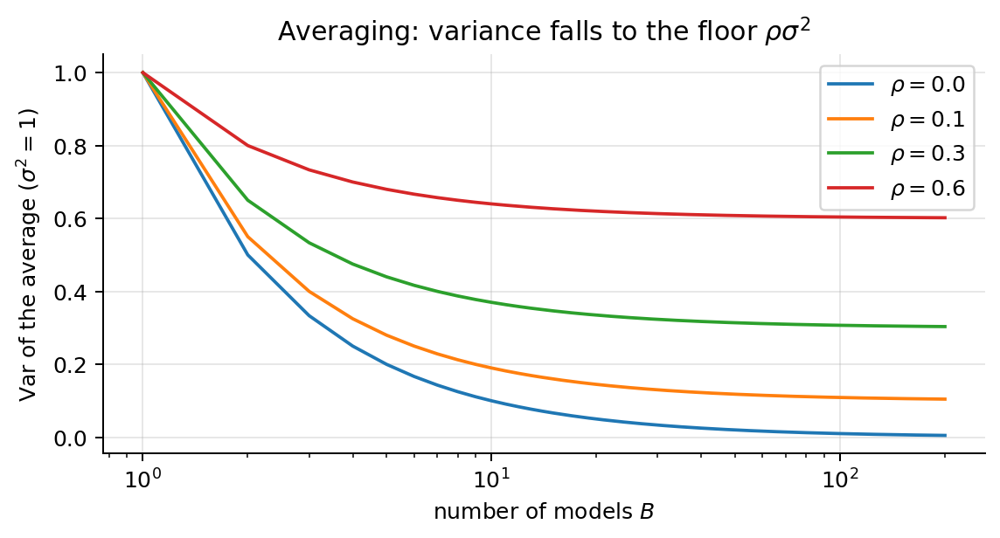
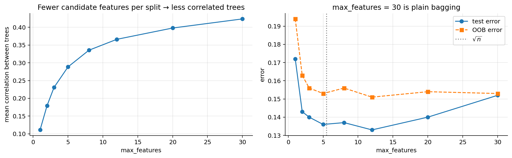
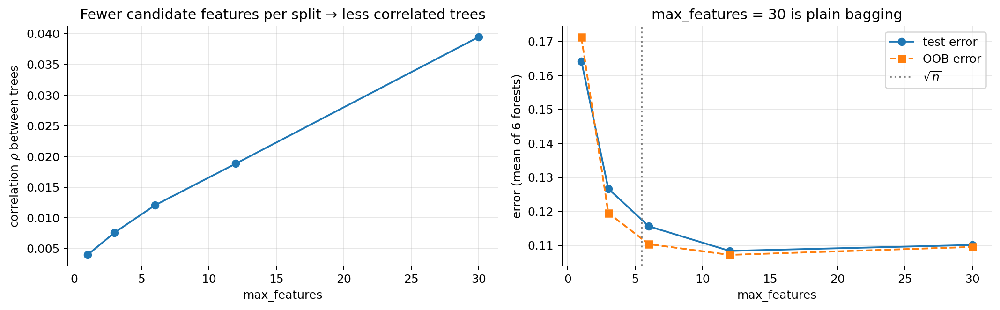
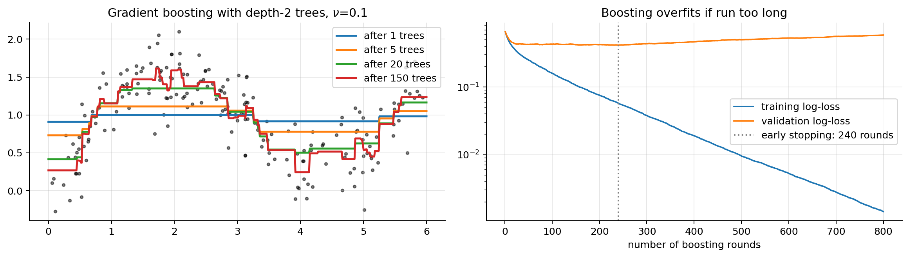
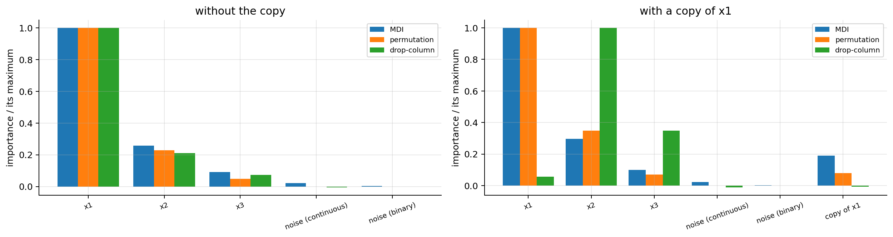
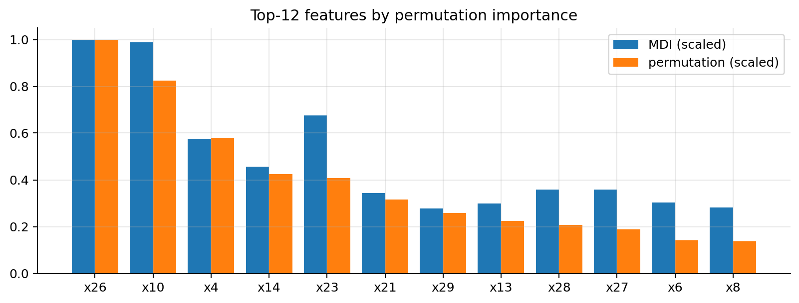
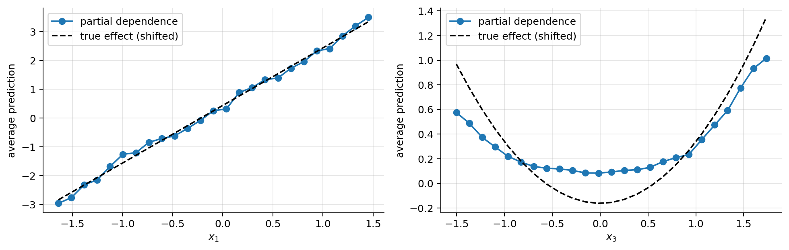
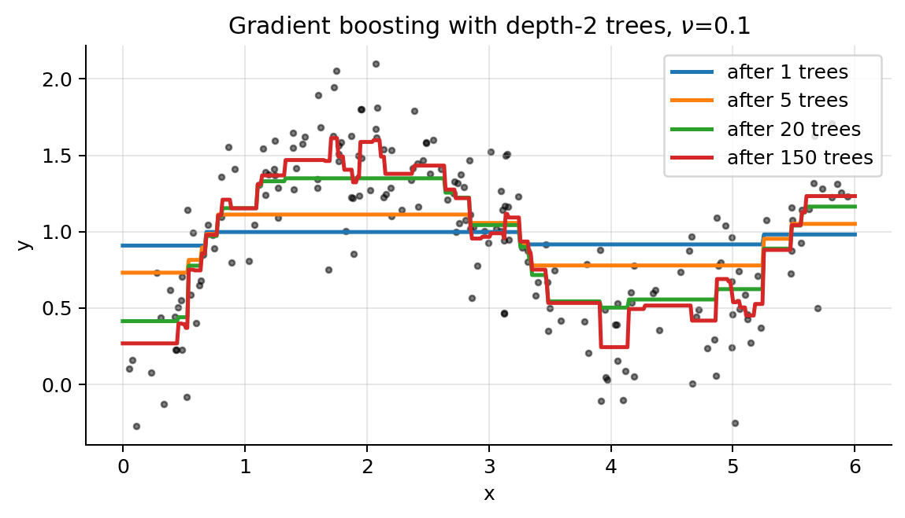
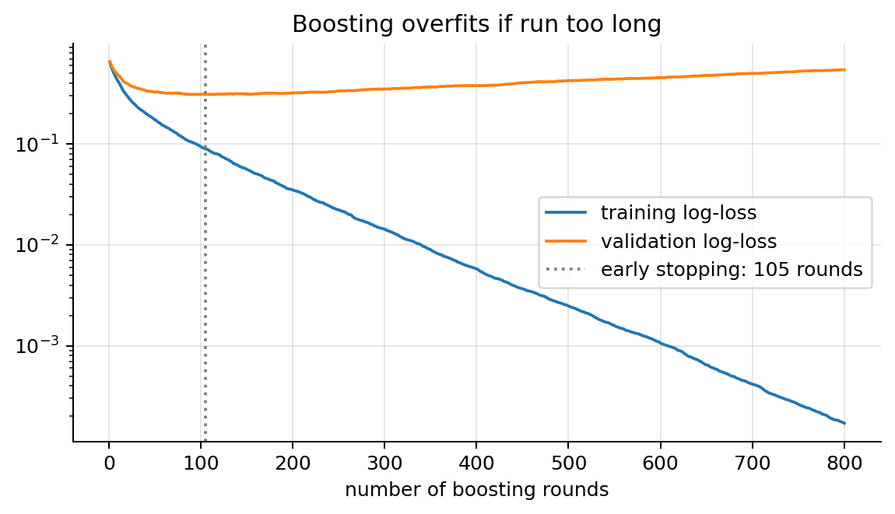
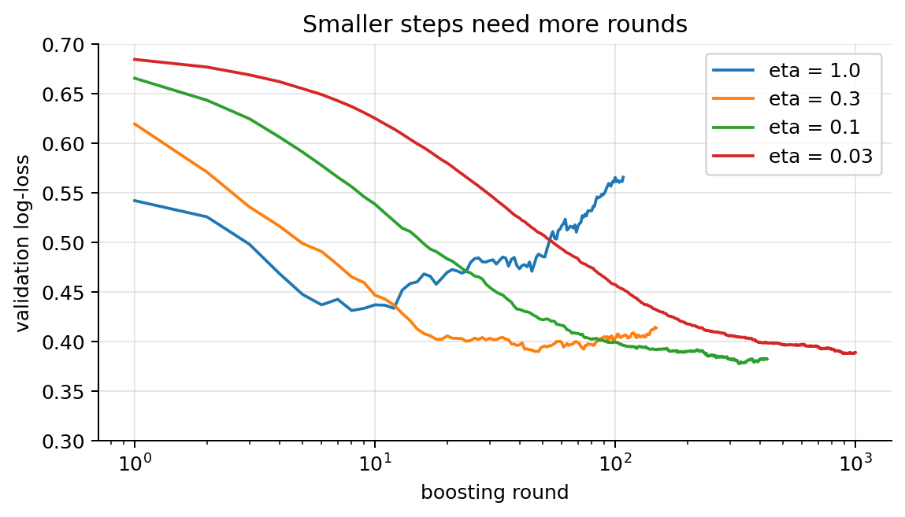

import numpy as np
import matplotlib.pyplot as plt
plt.rcParams.update({"figure.dpi": 90, "axes.grid": True, "grid.alpha": 0.3,
"axes.spines.top": False, "axes.spines.right": False})
rng = np.random.default_rng(0)07 · Bagging, Random Forests and Boosting
Note 06 ended with the main weakness of decision trees: high variance. A deep tree fits its training set almost perfectly, but a slightly different training set gives a very different tree. Ensembles fix this by combining many trees, in two opposite ways:
- Bagging and random forests train many deep (low-bias, high-variance) trees independently on perturbed copies of the data and average them: the variance goes down.
- Boosting trains many shallow (high-bias, low-variance) trees sequentially, each one correcting what the ensemble so far gets wrong: the bias goes down.
This note is the reference text for the Bagging, Random Forest and Boosting deck. It covers every slide in more depth and adds: when bagging helps and when it does not, a measurement of the tree correlation that random forests reduce, feature importance and partial dependence, AdaBoost derived from the exponential loss, the general gradient boosting algorithm (from scratch for squared loss and log-loss), the second-order derivation behind XGBoost checked against the xgboost library, the practical knobs of boosting, and the assumptions of ensembles with how to check them.
What you need. Regression and classification trees, impurity and leaf values (note 06); bias, variance and cross-validation (note 00); the squared loss and its gradient (note 01); logistic regression, the sigmoid \(\sigma(z) = 1/(1 + e^{-z})\) and the log-loss gradient \(p - y\) (note 02); basic probability (variance, covariance, independence).
After this note you can
- prove the variance formula for an average of correlated models, and explain from it why random forests beat bagging;
- explain the bootstrap and the out-of-bag error, and use the OOB error as a free cross-validation estimate;
- say when bagging helps (unstable, low-bias learners) and when it does not;
- compute and interpret impurity, permutation and drop-column importances, and partial dependence;
- derive AdaBoost from the exponential loss, and gradient boosting as gradient descent in function space;
- derive XGBoost’s leaf weights and split gain, and reproduce a tree of the
xgboostlibrary by hand; - tune boosting (learning rate, number of trees, early stopping, subsampling, depth,
min_child_weight) and handle noisy labels, imbalanced classes and monotone constraints.
Notation. \(m\) training examples \((\mathbf{x}^{(i)}, y^{(i)})\), \(n\) features. A single model (a “base learner”, usually a tree) is \(h(\mathbf{x})\); an ensemble of \(B\) models averaged is \(\bar h\); a boosted additive model after \(t\) rounds is \(F_t(\mathbf{x})\). For AdaBoost labels are \(y \in \{-1, +1\}\); for log-loss boosting \(y \in \{0, 1\}\).
- Part I · Averaging: bagging and random forests (sections 1–8)
- Part II · Boosting (sections 9–15)
- Part III · Assumptions and comparison (sections 16–17)
Part I · Averaging: bagging and random forests
1. The idea: many noisy guesses, one good average
A class exercise (slide 3): how much does an Apple AirTag cost? Everyone writes a guess, without talking to anyone. Each guess is noisy, but the average of the class is usually close to the real price (35 €). The errors of different people partly cancel.
The same happens with models. If \(h_1(\mathbf{x}),\dots,h_B(\mathbf{x})\) are the predictions of \(B\) models at a fixed point, each with variance \(\sigma^2\), and they are independent, their average has variance
\[ \mathrm{Var}\Big(\frac1B\sum_{b=1}^Bh_b\Big) = \frac{1}{B^2}\sum_{b=1}^B\mathrm{Var}(h_b) = \frac{B\sigma^2}{B^2} = \frac{\sigma^2}{B} \]
(the variance of a sum of independent variables is the sum of the variances, and \(\mathrm{Var}(cX) = c^2\mathrm{Var}(X)\)). If people talk, the guesses become correlated and the average helps less. Section 2 makes this exact.
Try it. Move the correlation \(\rho\) and the number of models \(B\). With \(\rho = 0\) the variance falls like \(1/B\); with \(\rho = 0.3\) and \(B = 100\) it is already almost at the floor \(\rho\sigma^2 = 0.3\,\sigma^2\) (dashed); with \(\rho = 0.8\) averaging barely helps.
2. Why averaging works: the variance of an average
Setting (slide 4). \(B\) models at a fixed point \(\mathbf{x}\), identically distributed (same mean \(\mu\) and variance \(\sigma^2\)), and any two of them with correlation \(\rho\), i.e. covariance \(\mathrm{Cov}(h_b, h_{b'}) = \rho\,\sigma\cdot\sigma = \rho\sigma^2\). The randomness comes from the training data and from any randomisation of the learning algorithm. Their average is \(\bar h = \frac1B\sum_bh_b\).
Theorem. \[ \boxed{\mathrm{Var}(\bar h) = \rho\,\sigma^2 + \frac{1-\rho}{B}\,\sigma^2} \]
Proof.
- Variance of a sum = all the variances + the covariances of all ordered pairs: \[\mathrm{Var}\Big(\sum_{b=1}^Bh_b\Big) = \sum_b\mathrm{Var}(h_b) + \sum_{b\ne b'}\mathrm{Cov}(h_b, h_{b'}).\]
- Count the terms: \(B\) variances, and \(B(B-1)\) ordered pairs with \(b \ne b'\): \[= B\sigma^2 + B(B-1)\,\rho\sigma^2 .\]
- The average is the sum times \(\frac1B\), and \(\mathrm{Var}(cX) = c^2\,\mathrm{Var}(X)\): \[\mathrm{Var}(\bar h) = \frac{B\sigma^2 + B(B-1)\rho\sigma^2}{B^2} = \frac{\sigma^2}{B} + \frac{B-1}{B}\,\rho\sigma^2 .\]
- Rearrange, using \(\frac{B-1}{B} = 1 - \frac1B\): \[= \frac{\sigma^2}{B} + \rho\sigma^2 - \frac{\rho\sigma^2}{B} = \rho\sigma^2 + \frac{1-\rho}{B}\,\sigma^2 . \quad\blacksquare\]
Numbers (slide 4): \(\sigma^2 = 1\), \(\rho = 0.3\). One model: \(1\). \(B = 10\): \(0.3 + 0.7/10 = 0.37\). \(B = 100\): \(0.3 + 0.7/100 = 0.307\). \(B \to \infty\): \(0.3\).
Averaging does not change the bias. By linearity of expectation, \(\mathbb{E}[\bar h] = \frac1B\sum_b\mathbb{E}[h_b] = \frac1B\cdot B\mu = \mu\): the ensemble has the same expected prediction as one model, hence the same bias. In the bias–variance decomposition of the squared error (note 00), \(\mathbb{E}\big[(y - \bar h)^2\big] = \text{noise} + \text{bias}^2 + \mathrm{Var}(\bar h)\), only the last term shrinks. Consequences:
- Average low-bias models: deep trees. Averaging high-bias models (stumps, linear models) leaves the bias where it is (section 5 shows it).
- As \(B\to\infty\) the second term vanishes, so more trees never hurt (they just cost compute): the error levels off, it does not go back up.
- The floor is \(\rho\sigma^2\): to go lower, the models must be less correlated. That is exactly what random forests add over bagging (section 6).
The code draws the formula and checks it by simulation: \(B\) correlated Gaussian “models” are built as a shared component plus independent parts, \(h_b = \sqrt{\rho}\,Z_0 + \sqrt{1-\rho}\,Z_b\) with independent standard normals, so \(\mathrm{Var}(h_b) = \rho + (1-\rho) = 1\) and \(\mathrm{Cov}(h_b, h_{b'}) = \rho\,\mathrm{Var}(Z_0) = \rho\).
sigma2 = 1.0; B = np.arange(1, 201)
plt.figure(figsize=(6.5, 3.6))
for rho in [0.0, 0.1, 0.3, 0.6]:
plt.plot(B, rho * sigma2 + (1 - rho) * sigma2 / B, label=rf"$\rho={rho}$")
plt.xscale("log"); plt.xlabel("number of models $B$"); plt.ylabel(r"Var of the average ($\sigma^2=1$)")
plt.legend(); plt.title(r"Averaging: variance falls to the floor $\rho\sigma^2$"); plt.tight_layout(); plt.show()
rng_v = np.random.default_rng(1)
for rho, Bm in [(0.3, 10), (0.3, 100)]:
Z0 = rng_v.normal(size=(20000, 1)); Zb = rng_v.normal(size=(20000, Bm))
h = np.sqrt(rho) * Z0 + np.sqrt(1 - rho) * Zb # 20,000 draws of B correlated models
print(f"ρ = {rho}, B = {Bm:3d}: simulated Var(average) = {h.mean(1).var():.3f}, formula = {rho + (1 - rho) / Bm:.3f}")
ρ = 0.3, B = 10: simulated Var(average) = 0.366, formula = 0.370
ρ = 0.3, B = 100: simulated Var(average) = 0.310, formula = 0.3073. The bootstrap
We only have one training set of \(m\) examples. To get “different” training sets, draw \(m\) examples with replacement from the \(m\) we have: a bootstrap sample (slide 5). Some examples appear several times, others not at all.
Probability that a given example is left out. One draw misses it with probability \(1 - \frac1m\). The \(m\) draws are independent, so
\[ P(\text{left out}) = \Big(1 - \frac1m\Big)^m . \]
Take logs: \(\ln\big(1 - \frac1m\big)^m = m\ln\big(1 - \frac1m\big) \approx m\cdot\big(-\frac1m\big) = -1\), because \(\ln(1-u) \approx -u\) for small \(u\) (first-order Taylor expansion). Hence
\[ \boxed{P(\text{left out}) \xrightarrow{m\to\infty} e^{-1} \approx 0.368} \]
| \(m\) | 10 | 100 | 1000 |
|---|---|---|---|
| \((1-1/m)^m\) | 0.349 | 0.366 | 0.368 |
By linearity of expectation (sum the indicator “example \(i\) is in the sample” over \(i\)), the expected fraction of distinct examples in a bootstrap sample is \(1 - (1 - 1/m)^m\): about 63.2 % for large \(m\), 65.1 % for \(m = 10\). The other ~36.8 % are that sample’s out-of-bag (OOB) examples.
Try it. Each click draws a bootstrap sample of the 10 examples: “×n” marks examples drawn \(n\) times, dashed ones were never drawn. After 100 more draws the average left-out fraction settles near 35 %, close to \((1 - 1/10)^{10} = 0.349\).
for m in [10, 100, 1000, 100000]:
frac_in = np.mean([len(np.unique(rng.integers(0, m, m))) / m for _ in range(200)])
print(f"m={m:6d}: fraction of distinct examples in a bootstrap sample = {frac_in:.3f} (theory 1-(1-1/m)^m = {1-(1-1/m)**m:.3f})")m= 10: fraction of distinct examples in a bootstrap sample = 0.657 (theory 1-(1-1/m)^m = 0.651)
m= 100: fraction of distinct examples in a bootstrap sample = 0.637 (theory 1-(1-1/m)^m = 0.634)
m= 1000: fraction of distinct examples in a bootstrap sample = 0.633 (theory 1-(1-1/m)^m = 0.632)
m=100000: fraction of distinct examples in a bootstrap sample = 0.632 (theory 1-(1-1/m)^m = 0.632)4. The out-of-bag (OOB) error
Every tree of a bagged ensemble has its own OOB examples, the ones it never saw. So every training example has a set of trees that did not train on it (slide 6). With 6 examples and 5 trees, each cell below says how many times the example is in that tree’s bootstrap sample (each column adds up to 6: every tree is trained on 6 draws); 0 = out-of-bag:
| example | tree 1 | tree 2 | tree 3 | tree 4 | tree 5 | OOB trees |
|---|---|---|---|---|---|---|
| 1 | 1 | 0 | 3 | 1 | 0 | 2, 5 |
| 2 | 1 | 0 | 1 | 2 | 2 | 2 |
| 3 | 0 | 3 | 2 | 2 | 0 | 1, 5 |
| 4 | 2 | 1 | 0 | 0 | 3 | 3, 4 |
| 5 | 0 | 1 | 0 | 1 | 1 | 1, 3 |
| 6 | 2 | 1 | 0 | 0 | 0 | 3, 4, 5 |
For every training example:
- take only the trees that did not see it (its OOB trees),
- average their predictions for it (example 4: trees 3 and 4),
- compare with its true label.
The average error over all examples is the OOB error. Every prediction is made by trees that did not train on that example, so it estimates the test error, like cross-validation, but for free: no extra training and no held-out set. With many trees, each example is OOB for about 37 % of them (section 3), so its OOB prediction averages roughly \(0.37B\) trees: slightly fewer than the full forest, which makes the OOB error slightly pessimistic for small \(B\). In scikit-learn: RandomForestClassifier(oob_score=True), then read oob_score_ (an accuracy; the error is \(1 -\) it).
OOB versus cross-validation. The code compares, on one training set of 1,000 examples, the OOB error of a forest, its 5-fold cross-validated error (which costs 5 extra forests) and its error on 2,000 new test examples.
from sklearn.datasets import make_classification
from sklearn.model_selection import train_test_split, cross_val_score, StratifiedKFold
from sklearn.ensemble import RandomForestClassifier
# a pool from one distribution: 2,000 test points and six disjoint training sets of 1,000 (section 6 uses all six)
Xpool, ypool = make_classification(n_samples=8000, n_features=30, n_informative=8, n_redundant=6,
class_sep=0.8, flip_y=0.05, random_state=2)
Xte2, yte2 = Xpool[:2000], ypool[:2000]
train_sets = [(Xpool[2000 + 1000 * k: 3000 + 1000 * k], ypool[2000 + 1000 * k: 3000 + 1000 * k]) for k in range(6)]
Xtr2, ytr2 = train_sets[0]
rf_oob = RandomForestClassifier(n_estimators=300, oob_score=True, random_state=0, n_jobs=-1).fit(Xtr2, ytr2)
cv_err = 1 - cross_val_score(RandomForestClassifier(n_estimators=300, random_state=0, n_jobs=-1), Xtr2, ytr2,
cv=StratifiedKFold(5, shuffle=True, random_state=0)).mean()
print(f"OOB error {1 - rf_oob.oob_score_:.3f} 5-fold CV error {cv_err:.3f} test error {1 - rf_oob.score(Xte2, yte2):.3f}")OOB error 0.098 5-fold CV error 0.101 test error 0.113The OOB and cross-validated estimates are close to each other and to the test error; the OOB estimate needed a single forest.
5. Bagging
Bootstrap aggregating (Breiman, 1996), slide 7:
for b = 1..B:
draw a bootstrap sample D_b of size m
fit a deep tree h_b on D_b (no pruning: low bias, high variance)
predict: regression h(x) = (1/B) Σ_b h_b(x)
classification average the class probabilities (or majority vote)Each bootstrap tree is a different random draw of “a tree trained on data like ours”, so the average of section 2 applies, with the randomness now coming from the bootstrap.
from sklearn.datasets import make_moons
from sklearn.tree import DecisionTreeClassifier
from sklearn.ensemble import BaggingClassifier
Xm, ym = make_moons(n_samples=500, noise=0.35, random_state=1)
Xtr, Xte, ytr, yte = train_test_split(Xm, ym, test_size=0.4, random_state=0)
g1, g2 = np.meshgrid(np.linspace(-2, 3, 300), np.linspace(-1.6, 2.1, 300)); G = np.c_[g1.ravel(), g2.ravel()]
models = [("single deep tree", DecisionTreeClassifier(random_state=0)),
("bagging, 200 trees", BaggingClassifier(DecisionTreeClassifier(), n_estimators=200, random_state=0)),
("random forest, 200 trees", RandomForestClassifier(n_estimators=200, random_state=0))]
fig, axes = plt.subplots(1, 3, figsize=(16, 4.3))
for ax, (name, mdl) in zip(axes, models):
mdl.fit(Xtr, ytr); P = mdl.predict_proba(G)[:, 1].reshape(g1.shape)
ax.contourf(g1, g2, P, levels=20, cmap="coolwarm", alpha=0.6); ax.contour(g1, g2, P, levels=[0.5], colors="k")
ax.scatter(Xtr[:, 0], Xtr[:, 1], c=ytr, cmap="coolwarm", edgecolor="k", s=12)
ax.set_title(f"{name}\ntrain acc {mdl.score(Xtr, ytr):.2f}, test acc {mdl.score(Xte, yte):.2f}")
plt.tight_layout(); plt.show()
The single tree carves out tiny regions around individual noisy points. The ensembles average those accidents away, giving smoother boundaries and graded probabilities.
When does bagging help?
Section 2 says bagging reduces the variance and leaves the bias alone. So it helps unstable learners (small changes in the data → big changes in the model: deep trees, 1-nearest-neighbour), does almost nothing for stable ones (linear regression, \(k\)-nearest neighbours with a large \(k\)), and cannot remove the bias of any learner.
To see this we need the bias and variance themselves, which requires many training sets from a known function. The code draws 40 training sets of \(m = 100\) points from \(y = \sin(2x) + x/2 + \varepsilon\), \(\varepsilon\sim\mathcal{N}(0, 0.4^2)\), fits each learner alone and bagged (\(B = 25\) bootstrap copies), and at 60 grid points computes
\[ \text{bias}^2 = \overline{\big(\mathbb{E}[\hat f(x)] - f(x)\big)^2}, \qquad \text{variance} = \overline{\mathrm{Var}\big(\hat f(x)\big)}, \]
where \(\mathbb{E}\) and \(\mathrm{Var}\) are taken over the 40 training sets and the bar averages over the grid.
from sklearn.tree import DecisionTreeRegressor
from sklearn.neighbors import KNeighborsRegressor
from sklearn.linear_model import LinearRegression
f_true = lambda x: np.sin(2 * x) + 0.5 * x
xg = np.linspace(0.1, 2.9, 60)[:, None]
R, m_bv, B_bv, sig = 40, 100, 25, 0.4
learners = {"deep tree": lambda: DecisionTreeRegressor(), "tree of depth 2": lambda: DecisionTreeRegressor(max_depth=2),
"linear regression": lambda: LinearRegression(), "30-nearest neighbours": lambda: KNeighborsRegressor(30)}
rng_bv = np.random.default_rng(0)
preds = {k: np.zeros((2, R, len(xg))) for k in learners} # [single / bagged, training set, grid point]
for r in range(R):
x_r = rng_bv.uniform(0, 3, m_bv)[:, None]; y_r = f_true(x_r[:, 0]) + rng_bv.normal(0, sig, m_bv)
for k, make in learners.items():
preds[k][0, r] = make().fit(x_r, y_r).predict(xg)
boot = [rng_bv.integers(0, m_bv, m_bv) for _ in range(B_bv)]
preds[k][1, r] = np.mean([make().fit(x_r[i], y_r[i]).predict(xg) for i in boot], axis=0)
for k, P in preds.items():
out = []
for j in range(2):
bias2 = ((P[j].mean(0) - f_true(xg[:, 0])) ** 2).mean(); var = P[j].var(0).mean()
out.append(f"bias² {bias2:.4f}, variance {var:.4f}")
print(f"{k:>22}: alone → {out[0]} | bagged → {out[1]}") deep tree: alone → bias² 0.0043, variance 0.1589 | bagged → bias² 0.0022, variance 0.0771
tree of depth 2: alone → bias² 0.0112, variance 0.0468 | bagged → bias² 0.0097, variance 0.0204
linear regression: alone → bias² 0.1464, variance 0.0075 | bagged → bias² 0.1460, variance 0.0077
30-nearest neighbours: alone → bias² 0.0352, variance 0.0097 | bagged → bias² 0.0358, variance 0.0088- Deep tree (unstable, low bias): bagging halves the variance (0.159 → 0.077) and the bias stays tiny. This is the case bagging was made for.
- Tree of depth 2 (more bias: 0.0112 against 0.0043): bagging halves its variance too (0.047 → 0.020), but the bias stays (0.0097): averaging cannot remove it. Here the bagged depth-2 tree even has the lowest total error of all, because with only 100 noisy points the bagged deep trees keep a lot of variance: depth is itself a bias–variance knob worth tuning, although on larger data fully grown trees are usually best in a forest (section 16.4).
- Linear regression (stable): bootstrap refits are almost identical to the original fit, so there is nothing to average away (variance 0.0075 → 0.0077), and its large bias (0.146: a line cannot follow a sine) stays.
- 30-nearest neighbours (stable, it already averages 30 points): its variance is small to begin with and bagging barely changes it (0.0097 → 0.0088).
6. Random forests: decorrelating the trees
Bagged trees are still strongly correlated: if one feature is very predictive, almost every tree puts it at the top, so the trees look alike and \(\rho\) stays high (section 2).
Random forest (Breiman, 2001, slide 8) = bagging + one extra source of randomness:
- Draw \(B\) bootstrap samples of the training set.
- On each one grow a deep tree, but at every split only a random subset of
max_featuresfeatures may be used (a new subset at each node). - Combine the \(B\) trees: majority vote or average of the probabilities (classification), average (regression).
- Typical values: \(\sqrt{n}\) for classification, \(n/3\) for regression (scikit-learn’s default for regression is all \(n\)).
max_features = nis plain bagging. - Smaller
max_features→ less correlated trees (lower \(\rho\)) but each tree is a bit weaker (higher \(\sigma^2\), and a little more bias). The best value is found by CV/OOB, but the defaults are usually good. - Each tree is grown deep and not pruned. Trees are independent, so training parallelises trivially (
n_jobs=-1).
Measuring \(\rho\). In section 2, \(\rho\) is the correlation between the predictions of two trees at the same point, where the randomness is the training set plus the bootstrap and feature sampling. Two trees grown on the same training set are correlated because they share that training set: \(\mathrm{Cov}(h_b(\mathbf{x}), h_{b'}(\mathbf{x})) = \mathrm{Var}_{\mathcal{D}}\big(\mathbb{E}[h(\mathbf{x})\mid\mathcal{D}]\big)\), the variance over training sets \(\mathcal{D}\) of the average tree. So we need several training sets. The code grows forests of 100 trees on the six disjoint training sets of section 4, and at each of the 2,000 test points estimates
- \(\sigma^2(\mathbf{x})\): the variance of a single tree’s predicted probability over all 600 trees;
- \(\rho(\mathbf{x})\): the average covariance between two different trees of the same forest, divided by \(\sigma^2(\mathbf{x})\);
then averages over the test points, and records the test and OOB errors, for several values of max_features (out of \(n = 30\)).
mf_values = [1, 3, 6, 12, 30]
rho_m, sig_m, err, oob = [], [], [], []
for mf in mf_values:
P, e, o = [], [], []
for Xs, ys in train_sets:
rf = RandomForestClassifier(n_estimators=100, max_features=mf, oob_score=True, random_state=0, n_jobs=-1).fit(Xs, ys)
P.append(np.array([t.predict_proba(Xte2)[:, 1] for t in rf.estimators_])) # (trees, test points)
e.append(1 - rf.score(Xte2, yte2)); o.append(1 - rf.oob_score_)
P = np.array(P); S, Bt = P.shape[0], P.shape[1] # (training sets, trees, points)
dev = P - P.mean(axis=(0, 1)) # centred at the overall mean
s2 = (dev ** 2).mean(axis=(0, 1)) # σ²(x)
cov = ((dev.sum(1) ** 2 - (dev ** 2).sum(1)) / (Bt * (Bt - 1))).mean(0) # mean over pairs b ≠ b' of dev_b·dev_b'
ok = s2 > 1e-9
rho_m.append((cov[ok] / s2[ok]).mean()); sig_m.append(s2[ok].mean()); err.append(np.mean(e)); oob.append(np.mean(o))
print(f"max_features = {mf:2d}: σ² = {sig_m[-1]:.3f}, ρ = {rho_m[-1]:.3f}, test error {err[-1]:.3f}, OOB error {oob[-1]:.3f}")
fig, axes = plt.subplots(1, 2, figsize=(12, 3.8))
axes[0].plot(mf_values, rho_m, "o-"); axes[0].set_xlabel("max_features"); axes[0].set_ylabel(r"correlation $\rho$ between trees")
axes[0].set_title("Fewer candidate features per split → less correlated trees")
axes[1].plot(mf_values, err, "o-", label="test error"); axes[1].plot(mf_values, oob, "s--", label="OOB error")
axes[1].axvline(np.sqrt(30), color="gray", ls=":", label=r"$\sqrt{n}$"); axes[1].set_xlabel("max_features")
axes[1].set_ylabel("error (mean of 6 forests)"); axes[1].legend(); axes[1].set_title("max_features = 30 is plain bagging")
plt.tight_layout(); plt.show()max_features = 1: σ² = 0.209, ρ = 0.004, test error 0.164, OOB error 0.171
max_features = 3: σ² = 0.174, ρ = 0.008, test error 0.127, OOB error 0.119
max_features = 6: σ² = 0.152, ρ = 0.012, test error 0.116, OOB error 0.110
max_features = 12: σ² = 0.138, ρ = 0.019, test error 0.108, OOB error 0.107
max_features = 30: σ² = 0.131, ρ = 0.039, test error 0.110, OOB error 0.109
Both effects of section 2 are visible: as max_features grows, the trees become stronger individually (\(\sigma^2\) falls) but more alike (\(\rho\) rises, about tenfold from 1 to 30 features). The test error is a trade-off between the two: it is highest with a single random feature per split (trees too weak, 0.164), lowest in between (0.108 with 12 features), and slightly higher again for plain bagging (0.110). (The absolute \(\rho\) values are small here because a single fully grown tree predicts a hard 0 or 1, so its variance \(\sigma^2\) is large; what matters is how \(\rho\) changes.) The OOB error follows the test error closely throughout.
Try it (slide 9). 220 noisy points (15 % of the labels flipped), deep trees on bootstrap samples with 1 random feature (of 2) per split, accuracy on 1,000 new points. One deep tree reaches 0.627; a forest of 5 trees 0.685 and a forest of 50 trees 0.746. The best possible accuracy here is 0.85, because 15 % of the labels are noise.
More trees never hurt. The error decreases with \(B\) and then plateaus; it does not go back up (section 2).
# Error vs. number of trees: it levels off, it does not go back up
n_list = [1, 2, 5, 10, 20, 50, 100, 200, 400]
single = 1 - DecisionTreeClassifier(random_state=0).fit(Xtr2, ytr2).score(Xte2, yte2)
e_bag = [1 - RandomForestClassifier(n_estimators=k, max_features=None, random_state=0, n_jobs=-1).fit(Xtr2, ytr2).score(Xte2, yte2) for k in n_list]
e_rf = [1 - RandomForestClassifier(n_estimators=k, max_features="sqrt", random_state=0, n_jobs=-1).fit(Xtr2, ytr2).score(Xte2, yte2) for k in n_list]
plt.figure(figsize=(6.5, 3.8))
plt.axhline(single, color="k", ls=":", label="single tree")
plt.plot(n_list, e_bag, "o-", label="bagging"); plt.plot(n_list, e_rf, "s-", label="random forest (sqrt)")
plt.xscale("log"); plt.xlabel("number of trees $B$"); plt.ylabel("test error"); plt.legend(); plt.title("More trees: error decreases, then plateaus")
plt.tight_layout(); plt.show()
Hyperparameters (slide 10):
| Hyperparameter | Effect | Typical choice |
|---|---|---|
n_estimators (\(B\)) |
more = lower variance, never overfits by itself | a few hundred; stop when the OOB error is flat |
max_features |
lower = more decorrelation, weaker trees | \(\sqrt{n}\) (classification), tune by OOB/CV |
max_depth, min_samples_leaf |
per-tree complexity | fully grown (section 16.4) |
bootstrap, max_samples |
size of each sample | default (a full-size bootstrap) |
7. Feature importance and partial dependence
A forest of hundreds of deep trees cannot be read like a single tree. Three ways to ask “how much does the model rely on feature \(j\)?”, and one to ask “how does the prediction change with feature \(j\)?”:
- Impurity importance (MDI, “mean decrease in impurity”),
feature_importances_: for every split on feature \(j\), the decrease in impurity (Gini, entropy or MSE, note 06) weighted by the fraction of training samples reaching that node; summed over the tree, averaged over the trees, normalised to sum to 1. Free (a by-product of training), but computed on the training data, so it rewards splits that only fit noise, and it is biased towards features with many distinct values (a continuous feature offers many more candidate thresholds, so by chance one of them always reduces impurity a little). - Permutation importance: on held-out data, shuffle the column of feature \(j\) (which breaks its link with \(y\) while keeping its distribution) and measure how much the score drops. Model-agnostic and computed on held-out data, so pure noise features get about 0. Cost: one prediction pass per feature and repeat.
- Drop-column importance: retrain without feature \(j\) and measure how much the held-out score drops. It answers the cleanest question (“how much worse is a model that never had this feature?”), at the cost of one retraining per feature.
Correlated features share or split the importance. If \(x_1\) and a near-copy of it are both present, the trees use one or the other, so MDI and permutation importance split the credit between them (evenly for exact copies; unevenly when one copy is noisier, because the trees then prefer the cleaner one), and each looks less important than \(x_1\) alone would. Drop-column importance goes further: dropping either copy costs almost nothing, because the other one replaces it, so both look unimportant although together they carry most of the signal. None of these measures is “wrong”: they answer different questions. Look at groups of correlated features together.
The code builds a regression problem with a known answer, \(y = 2x_1 + x_2 + 0.5x_3^2 + \varepsilon\), plus a continuous noise feature, a binary noise feature and, in the second run, a near-copy of \(x_1\) (\(x_1\) plus a little noise), and computes the three importances from scratch or with scikit-learn.
from sklearn.ensemble import RandomForestRegressor
from sklearn.inspection import permutation_importance
rng_fi = np.random.default_rng(0); m_fi = 1500
x1, x2, x3 = rng_fi.normal(size=(3, m_fi))
X_fi = np.c_[x1, x2, x3, rng_fi.normal(size=m_fi), rng_fi.integers(0, 2, m_fi), x1 + rng_fi.normal(0, 0.1, m_fi)]
y_fi = 2 * x1 + x2 + 0.5 * x3 ** 2 + rng_fi.normal(0, 0.5, m_fi)
names_fi = ["x1", "x2", "x3", "noise (continuous)", "noise (binary)", "copy of x1"]
imp = {}
for label, cols in [("without the copy", [0, 1, 2, 3, 4]), ("with a copy of x1", [0, 1, 2, 3, 4, 5])]:
Xa, Xb, ya, yb = train_test_split(X_fi[:, cols], y_fi, test_size=0.5, random_state=0)
forest = lambda: RandomForestRegressor(n_estimators=100, random_state=0, n_jobs=-1)
rf_fi = forest().fit(Xa, ya); base = rf_fi.score(Xb, yb) # held-out R²
perm = permutation_importance(rf_fi, Xb, yb, n_repeats=5, random_state=0).importances_mean
drop = [base - forest().fit(np.delete(Xa, j, 1), ya).score(np.delete(Xb, j, 1), yb) for j in range(len(cols))]
imp[label] = (cols, rf_fi.feature_importances_, perm, np.array(drop))
print(f"{label}: held-out R² = {base:.3f}")
for j, c in enumerate(cols):
print(f" {names_fi[c]:>19}: MDI {rf_fi.feature_importances_[j]:.3f} permutation {perm[j]:.3f} drop-column {drop[j]:.3f}")
fig, axes = plt.subplots(1, 2, figsize=(14, 3.8)); w = 0.27
for ax, (label, (cols, mdi, perm, drop)) in zip(axes, imp.items()):
k = np.arange(len(cols))
for off, v, nm in [(-w, mdi / mdi.max(), "MDI"), (0, perm / perm.max(), "permutation"), (w, drop / drop.max(), "drop-column")]:
ax.bar(k + off, v, w, label=nm)
ax.set_xticks(k); ax.set_xticklabels([names_fi[c] for c in cols], rotation=20, fontsize=8)
ax.set_ylabel("importance / its maximum"); ax.set_title(label); ax.legend(fontsize=8)
plt.tight_layout(); plt.show()without the copy: held-out R² = 0.906
x1: MDI 0.728 permutation 1.353 drop-column 0.782
x2: MDI 0.188 permutation 0.310 drop-column 0.164
x3: MDI 0.066 permutation 0.067 drop-column 0.058
noise (continuous): MDI 0.016 permutation -0.000 drop-column -0.004
noise (binary): MDI 0.002 permutation 0.000 drop-column -0.001
with a copy of x1: held-out R² = 0.905
x1: MDI 0.621 permutation 0.891 drop-column 0.009
x2: MDI 0.184 permutation 0.311 drop-column 0.162
x3: MDI 0.062 permutation 0.063 drop-column 0.056
noise (continuous): MDI 0.014 permutation 0.000 drop-column -0.002
noise (binary): MDI 0.002 permutation 0.000 drop-column -0.000
copy of x1: MDI 0.118 permutation 0.070 drop-column -0.001
Without the copy the three measures agree on the ranking \(x_1 > x_2 > x_3\); the noise features get a permutation and drop-column importance of about 0, while MDI gives the continuous noise feature a small positive share (and more than the binary one): the training-data bias. With the copy, MDI and permutation importance move part of \(x_1\)’s credit to the copy (\(x_1\)’s MDI falls from 0.728 to 0.621 and the copy gets 0.118; \(x_1\)’s permutation importance falls from 1.353 to 0.891), and drop-column importance declares both nearly useless (0.009 and −0.001), although together they carry most of the signal.
The existing classification problem of section 4, for comparison: the top features by permutation importance and their MDI.
rf = RandomForestClassifier(n_estimators=300, random_state=0, n_jobs=-1).fit(Xtr2, ytr2)
perm = permutation_importance(rf, Xte2, yte2, n_repeats=10, random_state=0)
order = np.argsort(perm.importances_mean)[::-1][:12]
fig, ax = plt.subplots(figsize=(9, 3.5)); w = 0.4
ax.bar(np.arange(12) - w / 2, rf.feature_importances_[order] / rf.feature_importances_.max(), w, label="MDI (scaled)")
ax.bar(np.arange(12) + w / 2, perm.importances_mean[order] / perm.importances_mean.max(), w, label="permutation (scaled)")
ax.set_xticks(range(12)); ax.set_xticklabels([f"x{j}" for j in order]); ax.legend(); ax.set_title("Top-12 features by permutation importance")
plt.tight_layout(); plt.show()
Partial dependence. Importance says how much, not how. The partial dependence of the model \(\hat F\) on feature \(j\) is the average prediction when feature \(j\) is set to \(v\) for every example and the other features keep their observed values:
\[ \mathrm{PD}_j(v) = \frac1m\sum_{i=1}^m\hat F\big(v,\ \mathbf{x}^{(i)}_{-j}\big), \]
where \(\mathbf{x}^{(i)}_{-j}\) are the other features of example \(i\). It is three lines from scratch (set the column, predict, average), and sklearn.inspection.partial_dependence with method="brute" computes the same thing. (For tree ensembles its default method="recursion" is a faster variant that averages over the training samples stored in the tree nodes instead of over the rows you pass, so its values differ slightly.) Caveat: with strongly correlated features it averages over combinations that never occur in the data (a copy of \(x_1\) held fixed while \(x_1\) moves), so read it together with the correlation structure; per-example curves (“ICE”, kind="individual") show whether the average hides different behaviours.
from sklearn.inspection import partial_dependence
Xa, Xb, ya, yb = train_test_split(X_fi[:, :5], y_fi, test_size=0.5, random_state=0)
rf_pd = RandomForestRegressor(n_estimators=100, random_state=0, n_jobs=-1).fit(Xa, ya)
fig, axes = plt.subplots(1, 2, figsize=(11, 3.6))
for ax, j, truth in [(axes[0], 0, lambda v: 2 * v), (axes[1], 2, lambda v: 0.5 * v ** 2)]:
pd_sk = partial_dependence(rf_pd, Xa, [j], kind="average", method="brute", grid_resolution=25)
grid = pd_sk["grid_values"][0]
pd_mine = []
for v in grid:
Xv = Xa.copy(); Xv[:, j] = v; pd_mine.append(rf_pd.predict(Xv).mean()) # set the column, predict, average
print(f"x{j + 1}: max |PD from scratch − sklearn| = {np.abs(np.array(pd_mine) - pd_sk['average'][0]).max():.1e}")
ax.plot(grid, pd_mine, "o-", label="partial dependence")
ax.plot(grid, truth(grid) - truth(grid).mean() + np.mean(pd_mine), "k--", label="true effect (shifted)")
ax.set_xlabel(f"$x_{j + 1}$"); ax.set_ylabel("average prediction"); ax.legend()
plt.tight_layout(); plt.show()x1: max |PD from scratch − sklearn| = 8.9e-16
x3: max |PD from scratch − sklearn| = 1.1e-16
The partial dependence recovers the linear effect of \(x_1\) closely and the U shape of \(x_3\), but the quadratic comes out flatter than the truth: \(x_3\) is the weakest signal, the trees give it fewer splits, and averaging many step functions smooths it. The grid spans the 5th to 95th percentile of each feature (scikit-learn’s default), because outside the data trees cannot extrapolate (section 16.6).
8. Random forests in review
Pros (slide 10): much less overfitting than a single tree and very good accuracy with little tuning; no feature scaling (trees only use the order of the values) and non-linear effects and interactions for free; robust to outliers in the inputs; trees are independent, so training runs in parallel; the OOB error comes for free.
Cons: less interpretable than one tree; bigger and slower to predict (\(B\) trees); cannot extrapolate beyond the training range (section 16.6); less suited to very sparse, high-dimensional data (e.g. text), where linear models do well.
Lab: Decision Trees and Random Forests · Decision Trees from scratch.
Part II · Boosting
9. The idea: weak learners in sequence
Bagging: many strong (deep) models trained independently, in parallel; the average lowers the variance. Boosting: many weak models (shallow trees) trained one after another, each focusing on what the ensemble so far gets wrong; it lowers the bias (slide 12). The result is an additive model, a weighted sum of \(M\) weak learners:
\[ F_M(\mathbf{x}) = \sum_{t=1}^M\alpha_t\,h_t(\mathbf{x}). \]
Two ways to “focus on the mistakes”: AdaBoost re-weights the training examples (sections 10–11); gradient boosting fits each new tree to the remaining errors, the residuals (sections 12–14).
10. AdaBoost: the algorithm and one round by hand
Labels \(y^{(i)}\in\{-1,+1\}\). Weak learners \(h_t(\mathbf{x})\in\{-1,+1\}\), usually stumps (trees with a single split). Start with equal weights \(w_i = \frac1m\). For \(t = 1,\dots,M\) (slide 13):
- Fit the stump with the smallest weighted error \[\varepsilon_t = \sum_{i:\ h_t(\mathbf{x}^{(i)})\ne y^{(i)}}w_i .\]
- Its vote, large when its error is small: \[\alpha_t = \frac12\ln\frac{1-\varepsilon_t}{\varepsilon_t}.\]
- Re-weight: mistakes up by \(e^{\alpha_t}\), hits down by \(e^{-\alpha_t}\), then divide by the total so the weights add up to 1: \[w_i \leftarrow \frac{w_i\,e^{-\alpha_t\,y^{(i)}h_t(\mathbf{x}^{(i)})}}{Z_t}, \qquad Z_t = \sum_iw_i\,e^{-\alpha_t\,y^{(i)}h_t(\mathbf{x}^{(i)})}\] (\(y\,h(\mathbf{x}) = +1\) if the stump is right and \(-1\) if it is wrong).
Predict with the weighted vote \(H(\mathbf{x}) = \mathrm{sign}\big(\sum_{t=1}^M\alpha_t\,h_t(\mathbf{x})\big)\).
Round 1 of the demo, by hand. \(m = 30\), all \(w_i = \frac1{30}\). The best stump misclassifies 5 points, so
\[ \varepsilon_1 = \frac{5}{30} = \frac16, \qquad \alpha_1 = \frac12\ln\frac{5/6}{1/6} = \frac12\ln5 = 0.80, \qquad e^{\alpha_1} = e^{\frac12\ln5} = \sqrt5,\quad e^{-\alpha_1} = \frac{1}{\sqrt5}. \]
Unnormalised new weights: each mistake \(\frac{1}{30}\sqrt5\), each hit \(\frac{1}{30\sqrt5}\). Their totals:
\[ \text{mistakes: } 5\cdot\frac{\sqrt5}{30} = 0.373, \qquad \text{hits: } 25\cdot\frac{1}{30\sqrt5} = 0.373, \qquad Z_1 = 0.745 . \]
Dividing by \(Z_1\): each mistake goes from \(\frac1{30}\) to \(\frac{\sqrt5/30}{0.745} = \frac1{10}\), each hit from \(\frac1{30}\) to \(\frac{1/(30\sqrt5)}{0.745} = \frac1{50}\).
The mistakes now carry exactly half of the weight, and this always happens. With \(e^{\alpha_t} = \sqrt{(1-\varepsilon_t)/\varepsilon_t}\), the total weight of the mistakes after the update is \(\varepsilon_te^{\alpha_t} = \sqrt{\varepsilon_t(1-\varepsilon_t)}\) and that of the hits is \((1-\varepsilon_t)e^{-\alpha_t} = \sqrt{\varepsilon_t(1-\varepsilon_t)}\): equal. So \(Z_t = 2\sqrt{\varepsilon_t(1-\varepsilon_t)}\) (\(= 2\sqrt{5/36} = 0.745\) ✓), and the stump just chosen has weighted error exactly \(\frac12\) under the new weights: the next stump cannot repeat it and must look elsewhere.
A coin flip gets no vote: \(\varepsilon_t = \frac12\) gives \(\alpha_t = \frac12\ln1 = 0\). Each weak learner only has to be a little better than chance (section 16.2 shows what goes wrong otherwise).
Try it (slide 14). Left: the current stump (dashed) on the weighted points (area ∝ weight, mistakes ringed). Right: the regions of the weighted vote so far. Round 1 has \(\varepsilon = 0.167\), \(\alpha = 0.80\) and 5 mistakes; after round 3 the vote makes 3 training errors, after round 6 one, and after round 20 none: the axis-aligned staircase approximates the diagonal boundary.
AdaBoost from scratch, on the widget’s own points. The slides draw their random numbers with a small generator (Mulberry32); the code ports it to Python, rebuilds the widget’s 30 points, and runs AdaBoost with exhaustive stumps (every feature, every threshold between two sorted values, both orientations), as the widget does.
def mulberry32(seed): # the pseudo-random generator of the slides (slides/assets/figures.js)
state = [seed]
i32 = lambda v: ((v + 2**31) % 2**32) - 2**31
imul = lambda a, b: i32((a % 2**32) * (b % 2**32))
def draw():
s = i32(state[0] + 0x6D2B79F5); state[0] = s
t = imul(s ^ ((s % 2**32) >> 15), 1 | s)
t = i32(t + imul(t ^ ((t % 2**32) >> 7), 61 | t)) ^ t
return ((t ^ ((t % 2**32) >> 14)) % 2**32) / 4294967296
return draw
r23, pts = mulberry32(23), []
while len(pts) < 30: # 30 points, label = side of the diagonal x1 + x2 = 1
p = [0.05 + 0.9 * r23(), 0.05 + 0.9 * r23()]
if abs(p[0] + p[1] - 1) >= 0.05: pts.append(p)
X_ada = np.array(pts); y_ada = np.where(X_ada.sum(1) > 1, 1, -1)
def best_stump(X, y, w): # smallest weighted error over all stumps
best = None
for j in range(X.shape[1]):
v = np.unique(X[:, j])
for thr in (v[:-1] + v[1:]) / 2:
for s in (1, -1):
e = w[np.where(X[:, j] > thr, s, -s) != y].sum()
if best is None or e < best[0] - 1e-12: best = (e, j, thr, s)
return best
w_ada, F_ada = np.full(30, 1 / 30), np.zeros(30)
for t in range(1, 21):
e, j, thr, s = best_stump(X_ada, y_ada, w_ada)
a = 0.5 * np.log((1 - e) / e)
h = np.where(X_ada[:, j] > thr, s, -s); F_ada += a * h
w_new = w_ada * np.exp(-a * y_ada * h); Z = w_new.sum()
if t == 1:
print(f"round 1: ε = {e:.4f} ({e * 30:.0f} mistakes), α = {a:.4f}, Z = {Z:.4f}, "
f"new weights: mistakes {np.unique((w_new / Z)[h != y_ada]).round(4)}, hits {np.unique((w_new / Z)[h == y_ada]).round(4)}, "
f"weight share of the mistakes {(w_new / Z)[h != y_ada].sum():.2f}")
w_ada = w_new / Z
if t in (1, 2, 3, 6, 20):
print(f"after round {t:2d}: ε_t = {e:.3f}, α_t = {a:.2f}, training errors of the vote = {(np.sign(F_ada) != y_ada).sum()}")round 1: ε = 0.1667 (5 mistakes), α = 0.8047, Z = 0.7454, new weights: mistakes [0.1], hits [0.02], weight share of the mistakes 0.50
after round 1: ε_t = 0.167, α_t = 0.80, training errors of the vote = 5
after round 2: ε_t = 0.180, α_t = 0.76, training errors of the vote = 5
after round 3: ε_t = 0.214, α_t = 0.65, training errors of the vote = 3
after round 6: ε_t = 0.216, α_t = 0.64, training errors of the vote = 1
after round 20: ε_t = 0.285, α_t = 0.46, training errors of the vote = 011. Why these formulas: AdaBoost minimises the exponential loss
The update rules of section 10 are not arbitrary. AdaBoost is forward stagewise additive modelling: it builds \(F_t = F_{t-1} + \alpha_th_t\) one term at a time, each time choosing \((\alpha_t, h_t)\) to minimise the exponential loss of the training set, without revisiting earlier terms:
\[ L(F) = \sum_{i=1}^m\exp\big(-y^{(i)}F(\mathbf{x}^{(i)})\big). \]
Derivation. Fix \(F_{t-1}\) and look for \(\alpha > 0\) and \(h\) with values \(\pm1\).
\[ \begin{aligned} L(F_{t-1} + \alpha h) &= \sum_i e^{-y^{(i)}F_{t-1}(\mathbf{x}^{(i)})}\,e^{-\alpha y^{(i)}h(\mathbf{x}^{(i)})} \\ &\quad\small e^{a+b} = e^ae^b\\ &= \sum_iw_i\,e^{-\alpha y^{(i)}h(\mathbf{x}^{(i)})} \\ &\quad\small w_i = e^{-y^{(i)}F_{t-1}(\mathbf{x}^{(i)})} \text{ does not depend on } \alpha, h\\ &= e^{-\alpha}\sum_{i:\,h = y}w_i + e^{\alpha}\sum_{i:\,h \ne y}w_i \\ &\quad\small y\,h = +1 \text{ if right}, -1 \text{ if wrong}\\ &= W\big[(1-\varepsilon)e^{-\alpha} + \varepsilon\,e^{\alpha}\big] \\ &\quad\small W = \textstyle\sum_iw_i,\ \varepsilon = \frac{1}{W}\sum_{h\ne y}w_i\\ &= W\big[e^{-\alpha} + \varepsilon\,(e^{\alpha} - e^{-\alpha})\big] \\ &\quad\small \text{expand.} \end{aligned} \]
- The best \(h\). For any \(\alpha > 0\) the factor \(e^{\alpha} - e^{-\alpha}\) is positive, so the loss is minimised by the \(h\) with the smallest weighted error \(\varepsilon\): step 1 of AdaBoost, with weights \(w_i \propto e^{-y^{(i)}F_{t-1}(\mathbf{x}^{(i)})}\).
- The best \(\alpha\). Differentiate \((1-\varepsilon)e^{-\alpha} + \varepsilon e^{\alpha}\) and set it to zero: \(-(1-\varepsilon)e^{-\alpha} + \varepsilon e^{\alpha} = 0 \Rightarrow e^{2\alpha} = \frac{1-\varepsilon}{\varepsilon} \Rightarrow \boxed{\alpha_t = \frac12\ln\frac{1-\varepsilon_t}{\varepsilon_t}}\): step 2. (The second derivative \((1-\varepsilon)e^{-\alpha} + \varepsilon e^{\alpha} > 0\), so it is a minimum.)
- The next weights. \(w_i^{(t+1)} = e^{-y^{(i)}F_t(\mathbf{x}^{(i)})} = e^{-y^{(i)}F_{t-1}(\mathbf{x}^{(i)})}\,e^{-\alpha_ty^{(i)}h_t(\mathbf{x}^{(i)})} = w_i^{(t)}\,e^{-\alpha_ty^{(i)}h_t(\mathbf{x}^{(i)})}\): step 3. Normalising them to sum to 1 multiplies the loss by a constant and changes no minimiser. \(\blacksquare\)
Two consequences.
- Training error falls exponentially. At the optimal \(\alpha_t\), the factor \((1-\varepsilon_t)e^{-\alpha_t} + \varepsilon_te^{\alpha_t} = 2\sqrt{\varepsilon_t(1-\varepsilon_t)} = Z_t\) (section 10). Starting from \(L(F_0) = m\), after \(M\) rounds \(L(F_M) = m\prod_tZ_t\). A misclassified point has \(yF \le 0\), so \(\mathbb{1}[yF \le 0] \le e^{-yF}\), and the training error is at most \(\frac1mL(F_M) = \prod_tZ_t\). Writing \(\varepsilon_t = \frac12 - \gamma_t\), \(Z_t = \sqrt{1 - 4\gamma_t^2} \le e^{-2\gamma_t^2}\) (because \(1 - u \le e^{-u}\)), so \[\text{training error} \le \exp\Big(-2\sum_{t=1}^M\gamma_t^2\Big):\] if every stump beats chance by a margin \(\gamma_t \ge \gamma > 0\), the training error goes to zero exponentially fast. In the widget: \(Z_1 = 0.745\), so after one round the bound is \(0.745\) and the actual training error is \(5/30 = 0.167\).
- What AdaBoost estimates. At a point where \(P(y = 1\mid\mathbf{x}) = p\), the expected loss \(pe^{-F} + (1-p)e^{F}\) is minimised where \(-pe^{-F} + (1-p)e^{F} = 0\), i.e. \(F^*(\mathbf{x}) = \frac12\ln\frac{p}{1-p}\): half the log-odds. So \(\sigma(2F)\) is a (rough) probability estimate, and AdaBoost is closely related to logistic regression; the difference is the loss, which matters with noisy labels (section 15.3).
Check against scikit-learn. AdaBoostClassifier (algorithm SAMME) uses \(\ln\frac{1-\varepsilon}{\varepsilon} = 2\alpha_t\) as the vote and multiplies only the mistakes by \(e^{2\alpha_t}\) before normalising. The ratio of a mistake’s weight to a hit’s weight is \(e^{2\alpha_t}\) in both versions, so after normalisation the weights, the stumps and the predictions are the same. The code runs our loop with scikit-learn’s own stumps (which choose splits by weighted Gini impurity rather than by weighted error) and compares.
from sklearn.ensemble import AdaBoostClassifier
Xs5, ys5 = make_classification(300, 5, random_state=0); ys5 = 2 * ys5 - 1
w5, F5, alphas = np.full(300, 1 / 300), np.zeros(300), []
for t in range(30):
stump = DecisionTreeClassifier(max_depth=1, random_state=0).fit(Xs5, ys5, sample_weight=w5); h = stump.predict(Xs5)
e = w5[h != ys5].sum(); a = 0.5 * np.log((1 - e) / e)
F5 += a * h; w5 = w5 * np.exp(-a * ys5 * h); w5 /= w5.sum(); alphas.append(a)
ada = AdaBoostClassifier(DecisionTreeClassifier(max_depth=1), n_estimators=30, random_state=0).fit(Xs5, ys5)
print(f"sklearn votes = 2 × ours: {np.allclose(ada.estimator_weights_, 2 * np.array(alphas))}; "
f"same predictions on all {len(ys5)} points: {np.array_equal(np.sign(F5), ada.predict(Xs5))}")sklearn votes = 2 × ours: True; same predictions on all 300 points: True12. Gradient boosting: fit the residuals
Regression with the squared loss (slide 15). Instead of re-weighting points, each new tree predicts what is still missing: the residual.
- Start with a constant: \(F_0 = \bar y\).
- Compute the residuals \(r^{(i)} = y^{(i)} - F_{t-1}(\mathbf{x}^{(i)})\).
- Fit a small regression tree \(h_t\) to the pairs \((\mathbf{x}^{(i)}, r^{(i)})\).
- Update with a learning rate \(\nu\) (“shrinkage”): \(F_t = F_{t-1} + \nu\,h_t\). Back to 2.
Why \(\nu < 1\)? Many small corrections generalise better than a few big ones: each tree is fitted to noisy residuals, and shrinking it keeps any one tree’s mistakes from being fully absorbed (section 15.1).
By hand (slide 16, round 1): 4 points, stumps, \(\nu = 0.5\). Start: \(F_0 = \bar y = \frac{2+4+8+10}{4} = 6\).
| \(x\) | \(y\) | \(F_0\) | \(r_1 = y - F_0\) | \(h_1(x)\) | \(F_1 = F_0 + 0.5\,h_1\) | \(r_2 = y - F_1\) |
|---|---|---|---|---|---|---|
| 1 | 2 | 6 | −4 | −3 | 4.5 | −2.5 |
| 2 | 4 | 6 | −2 | −3 | 4.5 | −0.5 |
| 3 | 8 | 6 | +2 | +3 | 7.5 | +0.5 |
| 4 | 10 | 6 | +4 | +3 | 7.5 | +2.5 |
\(h_1\): the best stump on the residuals splits at \(x \le 2.5\) (the split that minimises the squared error of the residuals: the two halves are the most homogeneous) and predicts the mean residual on each side, \(\frac{-4-2}{2} = -3\) and \(\frac{2+4}{2} = +3\). Squared error: \(\sum r_1^2 = 16+4+4+16 = 40\), then \(\sum r_2^2 = 6.25+0.25+0.25+6.25 = 13\). The next tree is fitted to \(r_2\), and so on.
x4, y4 = np.array([[1.0], [2.0], [3.0], [4.0]]), np.array([2.0, 4.0, 8.0, 10.0])
F4 = np.full(4, y4.mean()); r1 = y4 - F4
h1 = DecisionTreeRegressor(max_depth=1).fit(x4, r1)
F4 = F4 + 0.5 * h1.predict(x4)
print(f"split at x ≤ {h1.tree_.threshold[0]}, leaf values {h1.predict(x4)}, F1 = {F4}, "
f"Σr1² = {(r1 ** 2).sum():.0f}, Σr2² = {((y4 - F4) ** 2).sum():.2f}")split at x ≤ 2.5, leaf values [-3. -3. 3. 3.], F1 = [4.5 4.5 7.5 7.5], Σr1² = 40, Σr2² = 13.00The same loop on 200 noisy points with trees of depth 2 and \(\nu = 0.1\) (left: the model after 1, 5, 20 and 150 trees):
xr = np.sort(rng.uniform(0, 6, 200)); yr = np.sin(xr) + 0.3 * xr + rng.normal(0, 0.3, 200)
gr = np.linspace(0, 6, 500)
nu, M = 0.1, 150
F = np.full_like(yr, yr.mean()); Fg = np.full_like(gr, yr.mean()); snaps = {}
for t in range(1, M + 1):
r = yr - F # pseudo-residuals = residuals
h = DecisionTreeRegressor(max_depth=2, min_samples_leaf=10).fit(xr[:, None], r)
F += nu * h.predict(xr[:, None]); Fg += nu * h.predict(gr[:, None])
if t in (1, 5, 20, 150): snaps[t] = Fg.copy()
plt.figure(figsize=(6.5, 3.8))
plt.scatter(xr, yr, s=8, color="k", alpha=0.5)
for t, f in snaps.items(): plt.plot(gr, f, lw=2, label=f"after {t} trees")
plt.legend(); plt.title(rf"Gradient boosting with depth-2 trees, $\nu$={nu}"); plt.xlabel("x"); plt.ylabel("y")
plt.tight_layout(); plt.show()
13. Why “gradient”: the general algorithm
Functional gradient descent (slide 17). Treat the predictions at the training points, \(F(\mathbf{x}^{(i)})\), as the parameters, and take a gradient descent step on the loss \(\sum_i\ell\big(y^{(i)}, F(\mathbf{x}^{(i)})\big)\):
\[ F(\mathbf{x}^{(i)}) \leftarrow F(\mathbf{x}^{(i)}) - \nu\,\frac{\partial\ell}{\partial F(\mathbf{x}^{(i)})} . \]
A step on the training points alone would be useless for new points. So we fit a tree \(h_t\) to the negative gradients and apply the step through the tree, at any \(\mathbf{x}\): \(F_t = F_{t-1} + \nu h_t\). This is gradient descent “in function space”, with the tree as a smooth-ish interpolator of the gradient.
The negative gradients are called pseudo-residuals:
\[ r^{(i)}_t = -\left.\frac{\partial\,\ell(y^{(i)}, F)}{\partial F}\right|_{F = F_{t-1}(\mathbf{x}^{(i)})} . \]
- Squared loss \(\ell = \frac12(y - F)^2\): \(\frac{\partial\ell}{\partial F} = -(y - F)\) (chain rule), so \(r = y - F\). The negative gradient is the residual, and section 12 was gradient boosting all along.
- Log-loss (classification, \(y\in\{0,1\}\)), with \(F\) = log-odds and \(p = \sigma(F)\): \(\ell = -[y\ln p + (1-y)\ln(1-p)]\). \[\frac{\partial\ell}{\partial p} = -\frac yp + \frac{1-y}{1-p} = \frac{p-y}{p(1-p)}, \qquad \frac{\partial p}{\partial F} = p(1-p),\] \[\frac{\partial\ell}{\partial F} = \frac{p-y}{p(1-p)}\cdot p(1-p) = p - y \quad\Longrightarrow\quad r = y - p,\] by the chain rule, with the same cancellation as in logistic regression (note 02).
The full algorithm (Friedman, 2001). Input: a differentiable loss \(\ell\), the number of trees \(M\), the learning rate \(\nu\), the tree size.
- Initial constant. \(F_0 = \arg\min_c\sum_i\ell(y^{(i)}, c)\).
- Squared loss: \(\frac{d}{dc}\sum_i\frac12(y^{(i)} - c)^2 = -\sum_i(y^{(i)} - c) = 0 \Rightarrow F_0 = \bar y\).
- Log-loss: \(\frac{d}{dc}\sum_i\ell = \sum_i(\sigma(c) - y^{(i)}) = 0 \Rightarrow \sigma(F_0) = \bar y \Rightarrow F_0 = \ln\frac{\bar y}{1 - \bar y}\), the log-odds of the base rate.
- For \(t = 1,\dots,M\):
- Pseudo-residuals \(r^{(i)}_t\) at \(F_{t-1}\).
- Fit a regression tree to \((\mathbf{x}^{(i)}, r^{(i)}_t)\) with the squared error (this chooses the splits); call its leaves \(R_{t1},\dots,R_{tJ}\).
- Leaf values by line search: in each leaf, the constant that minimises the actual loss, \(\gamma_{tj} = \arg\min_\gamma\sum_{i\in R_{tj}}\ell\big(y^{(i)}, F_{t-1}(\mathbf{x}^{(i)}) + \gamma\big)\).
- Squared loss: \(\frac{d}{d\gamma}\sum_{i\in R_{tj}}\frac12(r^{(i)} - \gamma)^2 = 0 \Rightarrow \gamma_{tj}\) = mean residual in the leaf (what the tree already predicts).
- Log-loss: no closed form. One Newton step from \(\gamma = 0\), using the first derivative \(\sum(p_i - y_i)\) and the second derivative \(\sum p_i(1-p_i)\) (differentiate \(p - y\) once more: \(\frac{\partial p}{\partial F} = p(1-p)\)): \[\gamma_{tj} = \frac{\sum_{i\in R_{tj}}(y^{(i)} - p^{(i)})}{\sum_{i\in R_{tj}}p^{(i)}(1 - p^{(i)})} .\]
- Shrunken update: \(F_t(\mathbf{x}) = F_{t-1}(\mathbf{x}) + \nu\sum_j\gamma_{tj}\,\mathbb{1}[\mathbf{x}\in R_{tj}]\).
From scratch for the log-loss, checked against scikit-learn’s GradientBoostingClassifier (which implements exactly this algorithm):
from scipy.special import expit
from sklearn.ensemble import GradientBoostingClassifier
Xgb, ygb = make_moons(400, noise=0.3, random_state=0)
nu_c, M_c, depth_c = 0.1, 50, 2
F_c = np.full(len(ygb), np.log(ygb.mean() / (1 - ygb.mean()))) # F0 = log-odds of the base rate
for t in range(M_c):
p = expit(F_c); r = ygb - p # pseudo-residuals y − p
tree = DecisionTreeRegressor(max_depth=depth_c, criterion="friedman_mse", random_state=0).fit(Xgb, r)
leaf = tree.apply(Xgb) # leaf index of every example
gamma = {l: r[leaf == l].sum() / (p[leaf == l] * (1 - p[leaf == l])).sum() for l in np.unique(leaf)} # Newton step
F_c += nu_c * np.array([gamma[l] for l in leaf])
gb_sk = GradientBoostingClassifier(n_estimators=M_c, learning_rate=nu_c, max_depth=depth_c, random_state=0).fit(Xgb, ygb)
print(f"max |F_ours − F_sklearn| over the training points: {np.abs(F_c - gb_sk.decision_function(Xgb)).max():.1e}")max |F_ours − F_sklearn| over the training points: 4.4e-16Try it (slide 18). 80 noisy points (\(\sigma = 0.3\)) around the dashed curve; trees of depth 2 with at least 5 points per leaf. Move \(M\) and \(\nu\). The training error always falls; the validation error falls, then rises: unlike a forest, boosting does overfit, so \(M\) is chosen by early stopping. With \(\nu = 0.3\) the best validation MSE is at \(M = 10\); with \(\nu = 1\) at only 5 trees, after which it overfits fast; with \(\nu = 0.1\) at 29 trees, with the lowest validation MSE of the three. No model beats the noise: the MSE on new data stays above \(\sigma^2 = 0.09\) (dotted).
14. XGBoost: the second-order derivation
eXtreme Gradient Boosting (Chen & Guestrin, 2016; slide 19) is gradient boosting with regularised trees, a second-order (Newton) step, and a very fast implementation (learning rate eta, row and column subsampling, early stopping, missing values, parallel split search). With LightGBM and CatBoost it is a top choice for tabular data; for images, audio and text, deep learning wins. The slides give only the leaf value for the squared loss. Here is the general derivation. (In this section the new tree is called \(f_t\), as in the XGBoost paper, because \(h_i\) is needed for second derivatives.)
The objective of round \(t\). A tree \(f_t\) with \(T\) leaves maps each \(\mathbf{x}\) to a leaf \(q(\mathbf{x})\in\{1,\dots,T\}\) and predicts that leaf’s weight \(w_{q(\mathbf{x})}\). With a complexity penalty \(\Omega(f_t) = \gamma T + \frac12\lambda\sum_{j=1}^Tw_j^2\):
\[ \mathrm{Obj}_t = \sum_{i=1}^m\ell\big(y^{(i)}, F_{t-1}(\mathbf{x}^{(i)}) + f_t(\mathbf{x}^{(i)})\big) + \gamma T + \frac12\lambda\sum_{j=1}^Tw_j^2 . \]
Step 1 · Second-order Taylor expansion of each loss term around \(F_{t-1}(\mathbf{x}^{(i)})\), in the small change \(f_t(\mathbf{x}^{(i)})\):
\[ \begin{gathered} \ell\big(y^{(i)}, F_{t-1}^{(i)} + f_t^{(i)}\big) \approx \ell\big(y^{(i)}, F_{t-1}^{(i)}\big) + g_i\,f_t^{(i)} + \frac12h_i\,\big(f_t^{(i)}\big)^2, \\ g_i = \frac{\partial\ell}{\partial F}\Big|_{F_{t-1}^{(i)}},\quad h_i = \frac{\partial^2\ell}{\partial F^2}\Big|_{F_{t-1}^{(i)}} . \end{gathered} \]
The first term does not depend on \(f_t\), so it can be dropped.
Step 2 · Group by leaf. Every example in leaf \(j\) gets the same value \(w_j\). With \(I_j = \{i : q(\mathbf{x}^{(i)}) = j\}\), \(G_j = \sum_{i\in I_j}g_i\) and \(H_j = \sum_{i\in I_j}h_i\):
\[ \begin{aligned} \mathrm{Obj}_t &\approx \sum_{j=1}^T\Big[\sum_{i\in I_j}g_iw_j + \frac12\sum_{i\in I_j}h_iw_j^2\Big] + \gamma T + \frac12\lambda\sum_jw_j^2 \\ &= \sum_{j=1}^T\Big[G_jw_j + \frac12(H_j + \lambda)w_j^2\Big] + \gamma T . \end{aligned} \]
Step 3 · Optimal leaf weight. Each leaf is a separate parabola in \(w_j\) (convex if \(H_j + \lambda > 0\)). Derivative zero:
\[ G_j + (H_j + \lambda)\,w_j = 0 \quad\Longrightarrow\quad \boxed{w_j^* = -\frac{G_j}{H_j + \lambda}} \]
Step 4 · The score of a tree structure. Substitute \(w_j^*\): \(G_jw_j^* + \frac12(H_j + \lambda)w_j^{*2} = -\frac{G_j^2}{H_j+\lambda} + \frac12\frac{G_j^2}{H_j+\lambda} = -\frac12\frac{G_j^2}{H_j+\lambda}\), so
\[ \mathrm{Obj}^* = -\frac12\sum_{j=1}^T\frac{G_j^2}{H_j + \lambda} + \gamma T . \]
The lower, the better; it scores a tree’s shape without fitting it.
Step 5 · The gain of a split. Split a leaf with sums \((G, H)\) into a left child \((G_L, H_L)\) and a right child \((G_R, H_R)\), with \(G = G_L + G_R\), \(H = H_L + H_R\). The objective before minus after (one leaf becomes two, so \(T\) grows by 1):
\[ \begin{aligned} \mathrm{Gain} &= \Big[-\frac12\frac{G^2}{H+\lambda} + \gamma\Big] - \Big[-\frac12\frac{G_L^2}{H_L+\lambda} - \frac12\frac{G_R^2}{H_R+\lambda} + 2\gamma\Big] \\ &= \boxed{\frac12\Big[\frac{G_L^2}{H_L+\lambda} + \frac{G_R^2}{H_R+\lambda} - \frac{(G_L+G_R)^2}{H_L+H_R+\lambda}\Big] - \gamma} \end{aligned} \]
The tree is grown greedily with the split of largest gain, and a split is kept only if its gain is positive: \(\gamma\) is the minimum gain needed to split.
Back to the deck’s formula. For the squared loss \(\ell = \frac12(y - F)^2\): \(g_i = F_{t-1}^{(i)} - y^{(i)} = -r^{(i)}\) (minus the residual) and \(h_i = 1\). Then \(G_j = -\sum_{i\in I_j}r^{(i)}\), \(H_j = N_j\) (the number of examples in the leaf), and
\[ w_j^* = \frac{\sum_{i\in\text{leaf}}r^{(i)}}{N_{\text{leaf}} + \lambda}, \]
exactly slide 19’s leaf value. \(\lambda = 0\) gives the mean residual, as in plain gradient boosting; \(\lambda > 0\) shrinks it towards 0, more for small leaves (residuals \(\{2, 4\}\) with \(\lambda = 1\) give \(w = \frac{6}{3} = 2\) instead of 3). For the log-loss, \(g_i = p_i - y_i\) and \(h_i = p_i(1 - p_i)\), and \(w_j^*\) is the Newton step of section 13 with \(\lambda\) added to the denominator.
min_child_weight is a minimum Hessian sum. XGBoost refuses a split if a child would have \(H_j <\) min_child_weight. For the squared loss \(H_j = N_j\), so it is a minimum number of examples per leaf. For the log-loss \(H_j = \sum p_i(1-p_i) \le N_j/4\), and it is small in leaves where the model is already confident (\(p\) near 0 or 1): those leaves need more examples before they may split, which stops the model from chasing a few confidently classified points.
Worked example. The four points of section 12, \(x = 1, 2, 3, 4\) and \(y = 2, 4, 8, 10\), starting from \(F_0 = 6\) (base_score=6), with \(\lambda = 1\), \(\gamma = 0\), one stump (max_depth=1) and learning rate 1. Then \(g = F_0 - y = (4, 2, -2, -4)\), \(h = (1, 1, 1, 1)\), \(G = 0\), \(H = 4\), and the parent term is \(G^2/(H+\lambda) = 0\).
| split | \((G_L, H_L)\) | \((G_R, H_R)\) | \(\frac{G_L^2}{H_L+1} + \frac{G_R^2}{H_R+1}\) | gain |
|---|---|---|---|---|
| \(x < 1.5\) | \((4, 1)\) | \((-4, 3)\) | \(\frac{16}{2} + \frac{16}{4} = 12\) | \(\frac12(12 - 0) = 6\) |
| \(x < 2.5\) | \((6, 2)\) | \((-6, 2)\) | \(\frac{36}{3} + \frac{36}{3} = 24\) | \(\frac12(24 - 0) = 12\) |
| \(x < 3.5\) | \((4, 3)\) | \((-4, 1)\) | \(\frac{16}{4} + \frac{16}{2} = 12\) | \(\frac12(12 - 0) = 6\) |
The best split is \(x < 2.5\) with gain 12. Its leaves are \(w_L^* = -\frac{6}{2+1} = -2\) and \(w_R^* = -\frac{-6}{2+1} = +2\) (plain gradient boosting would give the mean residuals \(-3\) and \(+3\)), so the new predictions are \(6 + (-2, -2, 2, 2) = (4, 4, 8, 8)\). With \(\gamma \ge 12\) the split would not pay for itself and the tree would stay a single leaf with weight \(-G/(H+\lambda) = 0\).
The code implements the split search from scratch (for one feature, which is all a stump on one feature needs) and compares it with xgboost configured identically (tree_method="exact", max_depth=1, learning_rate=1, n_estimators=1, reg_lambda=1, min_child_weight=0, base_score set).
import xgboost as xgb
def best_split(x, g, h, lam, gam=0.0, min_child_weight=0.0):
# exact greedy search on one feature; returns (gain, threshold, w_left, w_right), or None if no split pays
o = np.argsort(x); x, g, h = x[o], g[o], h[o]; G, H = g.sum(), h.sum(); best = None
for k in range(1, len(x)):
if x[k] == x[k - 1]: continue
GL, HL = g[:k].sum(), h[:k].sum(); GR, HR = G - GL, H - HL
if HL < min_child_weight or HR < min_child_weight: continue
gain = 0.5 * (GL ** 2 / (HL + lam) + GR ** 2 / (HR + lam) - G ** 2 / (H + lam)) - gam
if best is None or gain > best[0]:
best = (gain, (x[k - 1] + x[k]) / 2, -GL / (HL + lam), -GR / (HR + lam))
return best if best is not None and best[0] > 0 else None
def one_stump(objective_model, X, y, base, **kw):
mdl = objective_model(n_estimators=1, max_depth=1, learning_rate=1, reg_lambda=1, tree_method="exact",
base_score=base, **kw).fit(X, y)
return mdl, mdl.get_booster().trees_to_dataframe()
x4v = x4[:, 0]
print("squared loss, from scratch (gain, threshold, w_L, w_R):", best_split(x4v, 6 - y4, np.ones(4), lam=1.0))
mdl, df = one_stump(xgb.XGBRegressor, x4, y4, 6.0, gamma=0, min_child_weight=0)
print(f"xgboost: split at {df.Split[0]}, reported Gain {df.Gain[0]}, leaves {df.Gain[1]}, {df.Gain[2]}, "
f"predictions {mdl.predict(x4)}")
for gam in [23.9, 24.1]:
mdl, _ = one_stump(xgb.XGBRegressor, x4, y4, 6.0, gamma=gam, min_child_weight=0)
print(f"xgboost with gamma = {gam}: predictions {mdl.predict(x4)}")squared loss, from scratch (gain, threshold, w_L, w_R): (np.float64(12.0), np.float64(2.5), np.float64(-2.0), np.float64(2.0))
xgboost: split at 2.5, reported Gain 24.0, leaves -2.0, 2.0, predictions [4. 4. 8. 8.]
xgboost with gamma = 23.9: predictions [4. 4. 8. 8.]
xgboost with gamma = 24.1: predictions [6. 6. 6. 6.]Does it match? The split and both leaf weights match exactly. Two conventions differ from the formulas above, and the output shows both: xgboost reports the gain without the factor \(\frac12\) (24 instead of 12), and its gamma parameter is compared with that unhalved bracket, so the split survives gamma = 23.9 and is pruned at gamma = 24.1. In other words, xgboost’s gamma plays the role of \(2\gamma\) in the formulas of this section.
Log-loss and min_child_weight. Ten points on a line with 0/1 labels, starting from \(p = 0.5\) (base_score=0.5, i.e. \(F_0 = 0\)). Then \(g_i = 0.5 - y_i\) and \(h_i = 0.5\cdot0.5 = 0.25\) for every point, so \(H\) is a quarter of the number of points, and a child with 4 points has \(H = 1\). The code finds the best stump from scratch and with xgboost for three values of min_child_weight.
rng_x = np.random.default_rng(1)
x10 = np.round(rng_x.uniform(0, 10, 10), 1); y10 = (x10 + rng_x.normal(0, 2, 10) > 5).astype(float)
print("x =", x10, " y =", y10)
g10, h10 = 0.5 - y10, np.full(10, 0.25)
for mcw in [0, 1.2, 2]:
mine = best_split(x10, g10, h10, lam=1.0, min_child_weight=mcw)
mdl, df = one_stump(xgb.XGBClassifier, x10[:, None], y10, 0.5, gamma=0, min_child_weight=mcw)
xg = (df.Split[0], df.Gain[1], df.Gain[2]) if len(df) == 3 else "no split"
print(f"min_child_weight = {mcw}: from scratch {None if mine is None else tuple(np.round(mine, 4))}; "
f"xgboost (threshold, w_L, w_R): {xg}")x = [5.1 9.5 1.4 9.5 3.1 4.2 8.3 4.1 5.5 0.3] y = [1. 1. 0. 1. 0. 1. 1. 0. 0. 0.]
min_child_weight = 0: from scratch (np.float64(1.8), np.float64(4.15), np.float64(-1.0), np.float64(0.8)); xgboost (threshold, w_L, w_R): (np.float64(4.14999962), np.float64(-1.0), np.float64(0.800000012))
min_child_weight = 1.2: from scratch (np.float64(1.0), np.float64(4.65), np.float64(-0.6667), np.float64(0.6667)); xgboost (threshold, w_L, w_R): (np.float64(4.64999962), np.float64(-0.666666687), np.float64(0.666666687))
min_child_weight = 2: from scratch None; xgboost (threshold, w_L, w_R): no splitWith min_child_weight = 0 both find the same split and leaf weights. The best split has a left child of 4 points (\(H_L = 1.0\)), so min_child_weight = 1.2 forbids it and both implementations fall back to the best split with at least 5 points on each side (\(H \ge 1.25\)). With min_child_weight = 2 no split can give both children \(H \ge 2\) (the total is \(H = 2.5\)), and the tree stays a single leaf.
Lab: XGBoost and Gradient Boosting: gradient boosting from scratch on a toy problem, then XGBoost for regression, binary and multiclass classification, cross-validation, learning rate, number of trees, early stopping and feature importance. See also the XGBoost parameters.
15. Boosting in practice: what to do when…
The data for the first two subsections: 4,000 examples with 20 features, split into a training part, a validation part (for early stopping and tuning only) and a test part.
from sklearn.metrics import log_loss
Xbo, ybo = make_classification(4000, 20, n_informative=8, n_redundant=4, flip_y=0.05, class_sep=0.8, random_state=1)
Xbo_f, Xbo_te, ybo_f, ybo_te = train_test_split(Xbo, ybo, test_size=0.5, random_state=0)
Xbo_tr, Xbo_va, ybo_tr, ybo_va = train_test_split(Xbo_f, ybo_f, test_size=0.3, random_state=0)
print(f"training {len(ybo_tr)}, validation {len(ybo_va)}, test {len(ybo_te)} examples")training 1400, validation 600, test 2000 examples15.1 …the validation loss starts rising: learning rate, number of trees, early stopping
Symptom. The training loss keeps falling with more trees while the validation loss reaches a minimum and rises again.
Why. Unlike averaging, boosting keeps reducing the training loss: every new tree fits what is left, including the noise, so the model’s complexity grows with \(M\). The number of trees is a regularisation parameter, and the learning rate \(\nu\) sets how much each tree adds. In gradient descent terms, a smaller step needs more steps to reach the same place but follows the loss surface more carefully; empirically, small \(\nu\) with many trees generalises better (Friedman’s shrinkage).
Detect and fix. Monitor a validation loss and stop when it has not improved for a number of rounds (early stopping: early_stopping_rounds in XGBoost, n_iter_no_change in scikit-learn), keeping the best round. The existing scikit-learn example first (log-loss per round, with subsampling 0.8):
Xfit, Xval, yfit, yval = train_test_split(Xtr2, ytr2, test_size=0.25, random_state=0)
gb = GradientBoostingClassifier(n_estimators=800, learning_rate=0.1, max_depth=3, subsample=0.8, random_state=0).fit(Xfit, yfit)
tr_l = [log_loss(yfit, p) for p in gb.staged_predict_proba(Xfit)]
va_l = [log_loss(yval, p) for p in gb.staged_predict_proba(Xval)]
best = int(np.argmin(va_l)) + 1
plt.figure(figsize=(6.5, 3.8))
plt.plot(range(1, 801), tr_l, label="training log-loss"); plt.plot(range(1, 801), va_l, label="validation log-loss")
plt.axvline(best, color="gray", ls=":", label=f"early stopping: {best} rounds")
plt.xlabel("number of boosting rounds"); plt.yscale("log"); plt.legend()
plt.title("Boosting overfits if run too long"); plt.tight_layout(); plt.show()
gb_best = GradientBoostingClassifier(n_estimators=best, learning_rate=0.1, max_depth=3, subsample=0.8, random_state=0).fit(Xfit, yfit)
for name, mdl in [("random forest", rf), (f"boosting, {best} rounds (early stop)", gb_best), ("boosting, 800 rounds", gb)]:
print(f"{name:>36}: test error {1 - mdl.score(Xte2, yte2):.3f} test log-loss {log_loss(yte2, mdl.predict_proba(Xte2)):.3f}")
random forest: test error 0.113 test log-loss 0.343
boosting, 105 rounds (early stop): test error 0.119 test log-loss 0.309
boosting, 800 rounds: test error 0.099 test log-loss 0.487Training loss keeps falling towards 0 while validation loss reaches a minimum and then rises. Notice that the log-loss degrades much earlier and more clearly than the error rate: the extra rounds mostly make the predicted probabilities over-confident.
Learning rate versus number of trees, with XGBoost and early stopping (patience 100 rounds, at most 3,000 rounds):
curves = {}
for eta in [1.0, 0.3, 0.1, 0.03]:
mdl = xgb.XGBClassifier(n_estimators=3000, learning_rate=eta, max_depth=3, early_stopping_rounds=100,
eval_metric="logloss", n_jobs=4, random_state=0)
mdl.fit(Xbo_tr, ybo_tr, eval_set=[(Xbo_va, ybo_va)], verbose=False)
curves[eta] = mdl.evals_result()["validation_0"]["logloss"]
print(f"eta = {eta:4}: best round {mdl.best_iteration + 1:4d}, best validation log-loss {min(curves[eta]):.4f}, "
f"test log-loss {log_loss(ybo_te, mdl.predict_proba(Xbo_te)):.4f}")
plt.figure(figsize=(6.5, 3.8))
for eta, c in curves.items():
plt.plot(range(1, len(c) + 1), c, label=f"eta = {eta}")
plt.xscale("log"); plt.xlabel("boosting round"); plt.ylabel("validation log-loss"); plt.ylim(0.3, 0.7)
plt.legend(); plt.title("Smaller steps need more rounds"); plt.tight_layout(); plt.show()eta = 1.0: best round 8, best validation log-loss 0.4315, test log-loss 0.3749
eta = 0.3: best round 48, best validation log-loss 0.3901, test log-loss 0.3386
eta = 0.1: best round 329, best validation log-loss 0.3777, test log-loss 0.3188
eta = 0.03: best round 900, best validation log-loss 0.3880, test log-loss 0.3254
Each smaller learning rate needs more rounds to reach its minimum (8, 48, 329 and 900 rounds); \(\eta = 1\) overfits after a handful of trees and reaches the worst minimum. Going from \(0.1\) to \(0.03\) multiplies the rounds (and the training time) without a better minimum here: the gains of shrinkage level off. Practical recipe: fix \(\eta\) around \(0.05\)–\(0.1\), let early stopping choose \(M\), and lower \(\eta\) at the end only if the time budget allows. The early-stopping set must not be the test set (section 16.5).
15.2 …it still overfits: subsampling, depth, min_child_weight
- Row subsampling (
subsamplein XGBoost and scikit-learn): each tree sees a random fraction of the rows, like a bootstrap without replacement. It decorrelates the trees (as in section 2) and acts as a regulariser (“stochastic gradient boosting”); 0.5–0.8 is common. - Column subsampling (
colsample_bytree,colsample_bylevel,colsample_bynode): the random-forest idea inside boosting. - Tree depth (
max_depth) sets the order of interactions the model can build. A sum of stumps is an additive model \(F(\mathbf{x}) = \sum_jF_j(x_j)\), with no interactions at all, because each stump depends on a single feature; depth 2 allows two-feature interactions, and so on. Typical values: 3–8. min_child_weight(section 14),reg_lambda(\(\lambda\), shrinks leaf weights) andgamma(minimum gain per split) regularise each tree.
The code checks the subsampling options on the data above and then the depth argument on a problem that is pure interaction: \(y = \mathbb{1}[x_1x_2 > 0]\) with 5 % of the labels flipped, where neither feature alone carries any information.
for ss, cs in [(1, 1), (0.5, 1), (1, 0.5), (0.5, 0.5)]:
mdl = xgb.XGBClassifier(n_estimators=2000, learning_rate=0.1, max_depth=3, subsample=ss, colsample_bytree=cs,
early_stopping_rounds=100, eval_metric="logloss", n_jobs=4, random_state=0)
mdl.fit(Xbo_tr, ybo_tr, eval_set=[(Xbo_va, ybo_va)], verbose=False)
print(f"subsample {ss}, colsample_bytree {cs}: best round {mdl.best_iteration + 1:4d}, test log-loss {log_loss(ybo_te, mdl.predict_proba(Xbo_te)):.4f}")
rng_i = np.random.default_rng(0); X_int = rng_i.uniform(-1, 1, (3000, 2)); y_int = (X_int[:, 0] * X_int[:, 1] > 0).astype(int)
flip = rng_i.random(3000) < 0.05; y_int[flip] = 1 - y_int[flip]
Xi_a, Xi_b, yi_a, yi_b = train_test_split(X_int, y_int, test_size=0.5, random_state=0)
for d in [1, 2, 3]:
mdl = xgb.XGBClassifier(n_estimators=300, learning_rate=0.1, max_depth=d, n_jobs=4, random_state=0).fit(Xi_a, yi_a)
print(f"interaction problem, max_depth = {d}: test accuracy {mdl.score(Xi_b, yi_b):.3f}")subsample 1, colsample_bytree 1: best round 329, test log-loss 0.3188
subsample 0.5, colsample_bytree 1: best round 230, test log-loss 0.3196
subsample 1, colsample_bytree 0.5: best round 385, test log-loss 0.3145
subsample 0.5, colsample_bytree 0.5: best round 198, test log-loss 0.3341
interaction problem, max_depth = 1: test accuracy 0.501
interaction problem, max_depth = 2: test accuracy 0.923
interaction problem, max_depth = 3: test accuracy 0.947On this data the subsampling options change the test log-loss by at most 0.015 (with early stopping the model is not overfitting much). The depth result is the striking one: stumps cannot represent an interaction at all and stay at chance level, while depth 2 already captures it.
15.3 …the labels are noisy: exponential loss versus log-loss
Symptom. Some training labels are wrong (claims coded with the wrong outcome); AdaBoost degrades more than expected.
Why (the math). Both losses are functions of the margin \(\mu = yF(\mathbf{x})\) (labels \(\pm1\)). The weight of a point in the next round is the magnitude of its negative gradient:
- exponential loss \(e^{-\mu}\): weight \(e^{-\mu}\), unbounded: a point that stays misclassified gets exponentially more weight every round;
- log-loss \(\ln(1 + e^{-\mu})\): weight \(\frac{e^{-\mu}}{1 + e^{-\mu}} = \sigma(-\mu) < 1\), bounded: a hopeless point can never pull harder than a borderline one.
A mislabelled point is exactly a point that the correct model keeps “misclassifying”. Under the exponential loss it takes over the weights and drags the stumps towards it.
How to detect it. From scratch, track the share of the total AdaBoost weight carried by the suspicious points; in real data, examine the points with the largest final weights (or pseudo-residuals) and ask whether their labels are right. Below, 9 % of the training labels are flipped at random, and the test labels are clean.
Xn, yn = make_classification(3000, 10, n_informative=5, flip_y=0, class_sep=1.0, random_state=3)
Xn_tr, Xn_te, yn_tr, yn_te = train_test_split(Xn, yn, test_size=0.5, random_state=0)
flip_n = np.random.default_rng(1).random(len(yn_tr)) < 0.1
yn_pm = 2 * np.where(flip_n, 1 - yn_tr, yn_tr) - 1 # noisy labels in {−1, +1}
w_n, share = np.full(len(yn_pm), 1 / len(yn_pm)), []
for t in range(200): # AdaBoost with depth-2 trees, from scratch
h = DecisionTreeClassifier(max_depth=2, random_state=0).fit(Xn_tr, yn_pm, sample_weight=w_n).predict(Xn_tr)
e = w_n[h != yn_pm].sum(); a = 0.5 * np.log((1 - e) / e)
w_n = w_n * np.exp(-a * yn_pm * h); w_n /= w_n.sum(); share.append(w_n[flip_n].sum())
print(f"flipped labels: {flip_n.mean():.1%} of the points; their share of the AdaBoost weight after "
f"1, 10, 50, 200 rounds: {share[0]:.1%}, {share[9]:.1%}, {share[49]:.1%}, {share[-1]:.1%}")
for noise in [0.0, 0.1, 0.2]:
fl = np.random.default_rng(1).random(len(yn_tr)) < noise; y_noisy = np.where(fl, 1 - yn_tr, yn_tr)
xg_n = xgb.XGBClassifier(n_estimators=300, learning_rate=0.1, max_depth=2, n_jobs=4, random_state=0).fit(Xn_tr, y_noisy)
ada_n = AdaBoostClassifier(DecisionTreeClassifier(max_depth=2), n_estimators=300, random_state=0).fit(Xn_tr, y_noisy)
print(f"{noise:.0%} flipped: clean-test accuracy, log-loss boosting (XGBoost) {xg_n.score(Xn_te, yn_te):.3f}, "
f"AdaBoost (exponential loss) {ada_n.score(Xn_te, yn_te):.3f}")flipped labels: 9.3% of the points; their share of the AdaBoost weight after 1, 10, 50, 200 rounds: 13.9%, 19.6%, 22.8%, 23.7%
0% flipped: clean-test accuracy, log-loss boosting (XGBoost) 0.898, AdaBoost (exponential loss) 0.896
10% flipped: clean-test accuracy, log-loss boosting (XGBoost) 0.871, AdaBoost (exponential loss) 0.855
20% flipped: clean-test accuracy, log-loss boosting (XGBoost) 0.849, AdaBoost (exponential loss) 0.823The flipped points’ share of the weight grows well above their share of the data, and AdaBoost loses more accuracy than log-loss boosting as the noise grows (the two are equal on clean labels).
What to do. (1) Prefer the log-loss (gradient boosting, XGBoost binary:logistic) over AdaBoost’s exponential loss when labels may be noisy. (2) Use shrinkage and early stopping, which stop before the model chases the noise. (3) Inspect the highest-weight points and fix labels where possible. (4) For regression with outliers in \(y\), use a robust loss: Huber or absolute error (loss="huber" / "absolute_error" in scikit-learn, reg:pseudohubererror / reg:absoluteerror in XGBoost), whose gradients are bounded as well.
15.4 …the classes are imbalanced: scale_pos_weight
Symptom. Fraud is 3 % of the claims; the model predicts “legitimate” almost always and the recall of fraud is low at the default threshold 0.5.
Why. With the log-loss, every example contributes \(g_i = p_i - y_i\) and \(h_i = p_i(1 - p_i)\) to the leaf sums of section 14. With 97 % negatives, the negatives dominate \(G_j\) and \(H_j\) in almost every leaf, and the leaf weights move towards “negative”. XGBoost’s scale_pos_weight \(= s\) multiplies the loss of every positive example by \(s\), hence its \(g_i\) and \(h_i\) by \(s\) (a constant factor passes through both derivatives): it is exactly a sample weight of \(s\) on the positives. The usual choice \(s = \frac{\#\text{negatives}}{\#\text{positives}}\) makes both classes contribute the same total weight.
Side effect. Weighting changes the target the model estimates: the predicted probabilities are inflated for the positives and no longer calibrated. Use weights when you need a decision at a fixed threshold; if you need probabilities (expected claim costs), keep the unweighted model and move the threshold instead.
from sklearn.metrics import recall_score, precision_score, average_precision_score
Xim, yim = make_classification(6000, 10, n_informative=5, weights=[0.97, 0.03], flip_y=0, class_sep=0.8, random_state=4)
Xim_a, Xim_b, yim_a, yim_b = train_test_split(Xim, yim, test_size=0.5, stratify=yim, random_state=0)
spw = (yim_a == 0).sum() / (yim_a == 1).sum()
for s in [1.0, spw]:
mdl = xgb.XGBClassifier(n_estimators=200, learning_rate=0.1, max_depth=3, scale_pos_weight=s, n_jobs=4, random_state=0).fit(Xim_a, yim_a)
p = mdl.predict_proba(Xim_b)[:, 1]; pred = (p > 0.5).astype(int)
print(f"scale_pos_weight = {s:5.1f}: recall {recall_score(yim_b, pred):.3f}, precision {precision_score(yim_b, pred):.3f}, "
f"average precision {average_precision_score(yim_b, p):.3f}, mean predicted p {p.mean():.3f} (true rate {yim_b.mean():.3f})")scale_pos_weight = 1.0: recall 0.511, precision 0.836, average precision 0.723, mean predicted p 0.024 (true rate 0.030)
scale_pos_weight = 32.3: recall 0.678, precision 0.656, average precision 0.705, mean predicted p 0.039 (true rate 0.030)With \(s = 32.3\) the recall of the minority rises and the precision falls, as expected from moving the effective threshold; the average precision (the area under the precision–recall curve, a threshold-free ranking measure) does not improve, and the mean predicted probability overshoots the true rate: the weights changed the operating point and the calibration, not the ranking.
15.5 …the model must respect a known direction: monotone constraints
In insurance and credit, regulators and common sense often require that the prediction moves in one direction with a feature (e.g. the expected claim frequency must not increase with years of driving experience). A tree ensemble fitted to noisy data can wiggle both ways. XGBoost’s monotone_constraints (one entry per feature: \(+1\) increasing, \(-1\) decreasing, \(0\) free) only accepts splits whose child weights respect the order, and bounds the leaf weights further down the tree so that the whole model is monotone in that feature. Below, a made-up claim frequency that decreases with the driver’s age plus noise; the code counts the upward steps of the prediction along a grid of ages (other features fixed).
rng_mc = np.random.default_rng(0); m_mc = 2000
age = rng_mc.uniform(18, 80, m_mc); other = rng_mc.normal(size=m_mc)
claims = rng_mc.poisson(np.clip(0.3 * np.exp(-(age - 18) / 25) + 0.05 + 0.03 * other, 0.01, None))
grid_age = np.c_[np.linspace(18, 80, 200), np.zeros(200)]
for mc in [None, (-1, 0)]:
mdl = xgb.XGBRegressor(n_estimators=200, learning_rate=0.05, max_depth=3, monotone_constraints=mc, n_jobs=4,
random_state=0).fit(np.c_[age, other], claims)
print(f"monotone_constraints = {mc}: upward steps of the prediction along age: {(np.diff(mdl.predict(grid_age)) > 1e-6).sum()}")monotone_constraints = None: upward steps of the prediction along age: 29
monotone_constraints = (-1, 0): upward steps of the prediction along age: 015.6 …training is slow, or the data have many categories: LightGBM and CatBoost
All three libraries implement the gradient boosting of sections 13–14 with the second-order leaf weights. The differences are engineering choices:
- XGBoost: exact or histogram split search (
tree_method="hist", the default, buckets each feature into at most 256 bins), level-wise trees, native handling of missing values (each split learns a default direction). - LightGBM: histogram-based and leaf-wise growth (always split the leaf with the largest gain, so trees are deeper and unbalanced; control them with
num_leaves), gradient-based one-side sampling (keeps the examples with large gradients and subsamples the rest) and exclusive feature bundling for sparse data: usually the fastest on large tables. - CatBoost: ordered boosting and ordered target statistics for categorical features (each example’s category is encoded with target means computed only from examples “before” it in a random order, which avoids target leakage), symmetric (oblivious) trees that are fast to evaluate: strong defaults, especially with many categorical features.
- scikit-learn’s
HistGradientBoostingClassifier/Regressorimplements the histogram approach with early stopping and native categorical support, without extra dependencies.
Part III · Assumptions and comparison
16. Assumptions: what they mean, how to check them, what to do
Ensembles make no distributional assumptions about the data (no linearity, no Gaussian errors, no constant variance: note 03 does not apply) and they are used for prediction. Their assumptions are about the ingredients of the ensemble (diverse base learners that beat chance, with the right amount of bias, enough data in every leaf) and about the data (independent rows, so that bootstrap, OOB and early stopping estimate what they claim; no need to extrapolate). For interpretation (importances, partial dependence), the caveats of section 7 apply.
| assumption | what goes wrong if it fails | how to check | what to do |
|---|---|---|---|
| 1. base learners are diverse (low \(\rho\)) | averaging stops helping: the error hits the floor \(\rho\sigma^2\) | measure \(\rho\) between trees (section 6); gain of the ensemble over one tree | lower max_features, row/column subsampling |
| 2. base learners beat chance | majority votes get worse with more models; AdaBoost stalls (\(\alpha_t \to 0\)) | per-model accuracy; \(\varepsilon_t\) per round | stronger base learners, better features |
| 3. the right bias for the method | bagging cannot fix a biased learner; boosting with deep trees overfits within a few rounds | train vs OOB error; best round and loss per depth | deep trees for forests; shallow-to-moderate, tuned depth for boosting |
| 4. enough data per leaf | noisy leaf values; for boosting they are added to the model and not averaged away | leaf sizes; validation curve over min_samples_leaf / min_child_weight |
raise min_child_weight, reg_lambda; forests usually fine fully grown |
| 5. independent rows, no leakage | OOB, CV and early stopping are optimistic (near-duplicates in and out of bag) | OOB/CV vs group-aware CV vs truly new data | group-aware splits (GroupKFold), separate early-stopping and test sets |
| 6. no extrapolation needed | trees predict a constant beyond the training range | compare the range of new inputs with the training range; residual trends | detrend with a linear model, add a linear base, or use another model |
16.1 Base learners are diverse
What it says. The errors of different base learners are not strongly correlated: \(\rho\) in section 2 is small.
Why it matters. The variance of the ensemble can never fall below \(\rho\sigma^2\) (section 2), however many models are averaged. With highly correlated trees an ensemble is barely better than one tree. This affects predictions only.
How to check. Measure \(\rho\) directly, as in section 6 (it needs several training sets, or bootstrap replicates of the training set as a proxy), or simply compare the error of the ensemble with the average error of its members: a small gain means the members agree too much. Section 6 shows both sides: with all 30 features per split (plain bagging) \(\rho\) is about ten times larger than with one, and the error is higher than with an intermediate value.
What to do. (1) Lower max_features (random forests) or use colsample_* (boosting). (2) Row subsampling (max_samples, subsample). (3) Combine different model families (a forest, a boosted model and a linear model average well because their errors differ); stacking learns the combination weights with cross-validation.
16.2 Base learners are better than chance
What it says. Each base classifier is right more often than a coin flip: accuracy \(p > \frac12\) for a vote, weighted error \(\varepsilon_t < \frac12\) for AdaBoost (“weak learning”).
Why it matters. For a majority vote of \(B\) independent classifiers, each correct with probability \(p\), the number of correct votes is \(\mathrm{Binomial}(B, p)\) and the vote is right if more than half are:
\[ P(\text{majority correct}) = P\big(\mathrm{Bin}(B, p) > B/2\big) \xrightarrow{B\to\infty} \begin{cases}1 & p > \frac12\\ 0 & p < \frac12\end{cases} \]
by the law of large numbers (the fraction of correct votes tends to \(p\)). Averaging amplifies whatever side of \(\frac12\) the members are on (Condorcet’s jury theorem). For AdaBoost, \(\alpha_t = \frac12\ln\frac{1-\varepsilon_t}{\varepsilon_t} \to 0\) as \(\varepsilon_t \to \frac12\), and the training-error bound \(\exp(-2\sum_t\gamma_t^2)\) of section 11 stops decreasing when \(\gamma_t = \frac12 - \varepsilon_t \to 0\): the ensemble stalls.
How to check. The binomial formula from scratch (with scipy.stats.binom) shows the amplification in both directions; in practice, check the accuracy of individual members on held-out data and, for AdaBoost, the sequence \(\varepsilon_t\) (the widget of section 10 shows it). Below, AdaBoost’s \(\varepsilon_t\) on informative features (holds) and on the same number of pure-noise features (violated).
from scipy.stats import binom
for p in [0.45, 0.55, 0.60]:
print(f"members correct with p = {p}: majority of B = 1, 5, 25, 101 correct with probability "
+ ", ".join(f"{binom.sf(Bv // 2, Bv, p):.3f}" for Bv in [1, 5, 25, 101]))
def adaboost_errors(X, y, T=30): # weighted error ε_t of each round (labels ±1)
w, eps = np.full(len(y), 1 / len(y)), []
for t in range(T):
h = DecisionTreeClassifier(max_depth=1, random_state=0).fit(X, y, sample_weight=w).predict(X)
e = w[h != y].sum(); a = 0.5 * np.log((1 - e) / e); eps.append(e)
w = w * np.exp(-a * y * h); w /= w.sum()
return np.array(eps)
X_inf, y_inf = make_classification(600, 5, n_informative=3, n_redundant=0, random_state=0); y_inf = 2 * y_inf - 1
X_noise = np.random.default_rng(0).normal(size=(600, 5)) # features unrelated to y
for name, XX in [("informative features", X_inf), ("pure-noise features", X_noise)]:
eps = adaboost_errors(XX, y_inf)
print(f"{name:>20}: ε_t in rounds 1, 5, 30 = {eps[0]:.3f}, {eps[4]:.3f}, {eps[-1]:.3f}; "
f"training error bound Π 2√(ε(1−ε)) after 30 rounds = {np.prod(2 * np.sqrt(eps * (1 - eps))):.3f}")members correct with p = 0.45: majority of B = 1, 5, 25, 101 correct with probability 0.450, 0.407, 0.306, 0.156
members correct with p = 0.55: majority of B = 1, 5, 25, 101 correct with probability 0.550, 0.593, 0.694, 0.844
members correct with p = 0.6: majority of B = 1, 5, 25, 101 correct with probability 0.600, 0.683, 0.846, 0.979
informative features: ε_t in rounds 1, 5, 30 = 0.288, 0.444, 0.477; training error bound Π 2√(ε(1−ε)) after 30 rounds = 0.766
pure-noise features: ε_t in rounds 1, 5, 30 = 0.457, 0.475, 0.494; training error bound Π 2√(ε(1−ε)) after 30 rounds = 0.983With members at \(p = 0.45\) the majority of 101 is right only 16 % of the time; at \(p = 0.55\) it is right 84 % of the time. On informative features the first stump has \(\varepsilon_1 = 0.288\) and after 30 rounds the bound is down to 0.766 (later stumps are weaker, as always). On noise features the first stump is barely below \(\frac12\) (0.457: it only fits chance patterns of the training set), \(\varepsilon_t\) drifts to 0.494, and the bound stays at 0.983: essentially no progress.
What to do. (1) Better features, or a stronger base learner (depth 2–3 instead of stumps). (2) If no base learner beats chance on held-out data, the signal is not there for this model: more rounds or more trees cannot create it.
16.3 The base learner has the right bias for the method
What it says. Bagging and random forests need low-bias base learners (deep trees), because averaging only removes variance. Boosting removes bias itself, so it can start from weak, high-bias learners (shallow trees); the stronger each learner, the sooner boosting overfits.
Why it matters. Averaging leaves the bias unchanged (section 2), so a forest of shallow trees is as biased as one shallow tree. Boosting reduces bias by adding terms; with deep trees each term already fits the training data closely, so the ensemble overfits after a few rounds and depends entirely on early stopping.
How to check. For a forest, compare training and OOB error: when both are high and close, the trees are too simple (bias); when training error is near 0 and OOB error is reasonable, the forest is doing its job. For boosting, compare the best round and the best validation loss (with early stopping) across depths. Section 5 showed the forest side with the true bias and variance; the code shows the same with the free OOB diagnostic.
for depth in [2, None]:
rf_d = RandomForestClassifier(n_estimators=200, max_depth=depth, oob_score=True, random_state=0, n_jobs=-1).fit(Xtr2, ytr2)
print(f"random forest, max_depth = {depth}: training error {1 - rf_d.score(Xtr2, ytr2):.3f}, OOB error {1 - rf_d.oob_score_:.3f}")
for depth in [2, 10]:
mdl = xgb.XGBClassifier(n_estimators=2000, learning_rate=0.1, max_depth=depth, early_stopping_rounds=100,
eval_metric="logloss", n_jobs=4, random_state=0).fit(Xbo_tr, ybo_tr, eval_set=[(Xbo_va, ybo_va)], verbose=False)
print(f"boosting, max_depth = {depth:2d}: best round {mdl.best_iteration + 1:4d}, best validation log-loss "
f"{min(mdl.evals_result()['validation_0']['logloss']):.4f}")random forest, max_depth = 2: training error 0.167, OOB error 0.196
random forest, max_depth = None: training error 0.000, OOB error 0.093
boosting, max_depth = 2: best round 501, best validation log-loss 0.4016
boosting, max_depth = 10: best round 47, best validation log-loss 0.3566The forest of depth-2 trees has a high training error and an OOB error to match (bias that averaging cannot fix); fully grown trees reach zero training error and the lower OOB error. The boosted depth-10 trees reach their best after 47 rounds instead of 501: they overfit much sooner. On this data set, which has many informative, interacting features, their best validation loss is nevertheless lower than with depth 2. “Shallow” is a starting point, not a rule: the depth has to be tuned, together with early stopping.
What to do. Forests: grow the trees deep (the default) and control variance with max_features and the number of trees. Boosting: start with shallow trees (depth 3–6), a moderate learning rate and early stopping, and tune the depth on validation data; deeper trees are worth it when the target has higher-order interactions (section 15.2).
16.4 Enough data per leaf
What it says. Each leaf value is estimated from enough examples to be reliable.
Why it matters. A leaf with one or two examples predicts their (noisy) average. In a random forest those noisy leaf values are averaged away across trees, which is why fully grown trees work well. In boosting each tree’s leaf values are added to the model; a tiny leaf that fits noise is not undone by later trees, and with the Newton step of section 14 a leaf with a small Hessian sum gets a large weight.
How to check. Leaf sizes from scratch (tree.apply gives the leaf of each training example; count per leaf) and a validation curve over min_samples_leaf / min_child_weight. Below, a noisy regression problem (make_friedman1 with noise standard deviation 3).
from sklearn.datasets import make_friedman1
from sklearn.metrics import mean_squared_error
Xfr, yfr = make_friedman1(1000, noise=3.0, random_state=0); Xfr_t, yfr_t = make_friedman1(3000, noise=3.0, random_state=1)
for msl in [1, 5, 20]:
rf_l = RandomForestRegressor(n_estimators=200, min_samples_leaf=msl, random_state=0, n_jobs=-1).fit(Xfr, yfr)
sizes = np.bincount(rf_l.estimators_[0].apply(Xfr)); sizes = sizes[sizes > 0]
print(f"random forest, min_samples_leaf = {msl:2d}: median leaf size {np.median(sizes):4.0f}, test MSE {mean_squared_error(yfr_t, rf_l.predict(Xfr_t)):.3f}")
for mcw in [1, 10, 50]:
xb_l = xgb.XGBRegressor(n_estimators=300, learning_rate=0.1, max_depth=6, min_child_weight=mcw, n_jobs=4, random_state=0).fit(Xfr, yfr)
print(f"XGBoost (depth 6, 300 rounds), min_child_weight = {mcw:2d}: test MSE {mean_squared_error(yfr_t, xb_l.predict(Xfr_t)):.3f}")random forest, min_samples_leaf = 1: median leaf size 1, test MSE 12.691
random forest, min_samples_leaf = 5: median leaf size 10, test MSE 12.775
random forest, min_samples_leaf = 20: median leaf size 43, test MSE 13.999
XGBoost (depth 6, 300 rounds), min_child_weight = 1: test MSE 12.072
XGBoost (depth 6, 300 rounds), min_child_weight = 10: test MSE 12.030
XGBoost (depth 6, 300 rounds), min_child_weight = 50: test MSE 11.441The forest is best with single-example leaves (larger leaves only add bias), while the boosted model with deep trees improves as min_child_weight grows: the two methods treat noisy leaves differently, as the math says.
What to do. Boosting: raise min_child_weight (a minimum number of examples for the squared loss), increase reg_lambda, or use shallower trees. Forests: keep the default; raise min_samples_leaf only to make the model smaller or faster, or when the OOB error says so.
16.5 Rows are independent: no leakage into OOB, CV or early stopping
What it says. The training rows are independent draws, so that “out of bag”, “in another fold” or “in the validation set” really means “new data”.
Why it matters. Real data often come in groups: several claims of the same policy, several photos of the same vehicle, monthly records of the same customer. Near-identical rows then fall on both sides of every split: a tree trained on one copy predicts the OOB copy almost perfectly. The OOB error, random \(k\)-fold cross-validation and a randomly drawn early-stopping set all become optimistic, and early stopping picks too many rounds. The model itself may be fine; our estimate of it is wrong, which is worse, because it drives every decision about the model.
How to check. Compare OOB or random-\(k\)-fold estimates with a group-aware split (GroupKFold: all rows of a group in the same fold) and, when possible, with truly new groups. Below, 300 made-up “policies” each appear 5 times with tiny variations (violated), and the forest is evaluated four ways.
from sklearn.model_selection import GroupKFold, KFold
rng_g = np.random.default_rng(0); n_pol, rep = 300, 5
Xg0 = rng_g.normal(size=(n_pol, 5)); yg0 = (Xg0[:, 0] + rng_g.normal(0, 1.5, n_pol) > 0).astype(int)
Xg = np.repeat(Xg0, rep, 0) + rng_g.normal(0, 0.05, (n_pol * rep, 5)); yg = np.repeat(yg0, rep)
policy = np.repeat(np.arange(n_pol), rep)
Xnew = rng_g.normal(size=(2000, 5)); ynew = (Xnew[:, 0] + rng_g.normal(0, 1.5, 2000) > 0).astype(int) # new policies
forest_g = lambda: RandomForestClassifier(n_estimators=200, oob_score=True, random_state=0, n_jobs=-1)
rf_g = forest_g().fit(Xg, yg)
kf = cross_val_score(forest_g(), Xg, yg, cv=KFold(5, shuffle=True, random_state=0)).mean()
gkf = cross_val_score(forest_g(), Xg, yg, cv=GroupKFold(5), groups=policy).mean()
print(f"accuracy estimates: OOB {rf_g.oob_score_:.3f}, random 5-fold CV {kf:.3f}, group 5-fold CV {gkf:.3f}; "
f"on 2,000 new policies {rf_g.score(Xnew, ynew):.3f}")accuracy estimates: OOB 0.985, random 5-fold CV 0.982, group 5-fold CV 0.689; on 2,000 new policies 0.661The OOB and random-fold estimates promise an accuracy near 0.98; on new policies the forest reaches about two thirds, and only the group-aware estimate is close to that.
What to do. (1) Split by group everywhere: GroupKFold / GroupShuffleSplit for validation, and a group-aware early-stopping set. (2) Ignore the OOB error when rows are grouped (scikit-learn’s bootstrap is not group-aware); or bootstrap whole groups yourself. (3) Keep three roles apart: the training set, the early-stopping/tuning set, and a test set used once at the end. Choosing the number of rounds on the test set makes the test score optimistic, because the minimum of a noisy validation curve is biased low.
16.6 No extrapolation needed
What it says. New inputs lie inside the range covered by the training data.
Why it matters. Every tree predicts a constant in each leaf, and the outermost leaves extend to infinity. Beyond the training range, forests and boosted trees predict a constant: the value at the edge. A trend (claim costs growing with inflation, exposure growing with time) cannot continue.
How to check. Compare the range of the inputs you will predict on with the training range (per feature, and in time for temporal data); plot predictions against a feature beyond its range. Below, a linear trend \(y = 2x + \varepsilon\) learnt on \(x \in [0, 10]\) and predicted up to \(x = 15\).
rng_e = np.random.default_rng(0); x_e = rng_e.uniform(0, 10, 300); y_e = 2 * x_e + rng_e.normal(0, 1, 300)
x_new = np.linspace(0, 15, 7)[:, None]
rf_e = RandomForestRegressor(n_estimators=200, random_state=0, n_jobs=-1).fit(x_e[:, None], y_e)
lin_e = LinearRegression().fit(x_e[:, None], y_e) # the fix: model the trend …
rf_res = RandomForestRegressor(n_estimators=200, random_state=0, n_jobs=-1).fit(x_e[:, None], y_e - lin_e.predict(x_e[:, None]))
print("x :", x_new[:, 0])
print("true trend 2x :", 2 * x_new[:, 0])
print("random forest :", rf_e.predict(x_new).round(1))
print("linear trend + forest on residuals:", (lin_e.predict(x_new) + rf_res.predict(x_new)).round(1)) # … and the rest with treesx : [ 0. 2.5 5. 7.5 10. 12.5 15. ]
true trend 2x : [ 0. 5. 10. 15. 20. 25. 30.]
random forest : [-0.1 4.4 9.8 15.1 19.7 19.7 19.7]
linear trend + forest on residuals: [-0.1 4.4 9.8 15.1 19.7 24.7 29.7]Inside \([0, 10]\) both follow the trend; beyond it the forest stays at its last value (about 19.7), while the detrended model continues the line.
What to do. (1) Model the trend with a linear model (or a GLM, note 02b) and let the ensemble learn the residuals, as above. (2) Transform the target or features so that the future looks like the past (ratios, rates, deflated amounts instead of raw euros). (3) Use a model that extrapolates (linear, or LightGBM’s linear trees) when extrapolation is unavoidable, and be explicit about its risk.
17. Bagging vs. boosting
| Bagging / Random forest | Boosting (AdaBoost, gradient boosting, XGBoost) | |
|---|---|---|
| Base learners | deep trees (low bias, high variance) | shallow trees (high bias, low variance) |
| Training | independent, parallel | sequential, each corrects the previous |
| Reduces mainly | variance | bias (and variance, via shrinkage and subsampling) |
| Combination | plain average / vote | weighted sum \(F_0 + \nu\sum h_t\) |
| More trees | never overfits, plateaus | eventually overfits → early stopping |
| Free error estimate | OOB error | none (needs a validation set) |
| Tuning effort | low (good defaults) | higher (\(\nu\), \(M\), depth, subsampling, regularisation) |
| Typical accuracy on tabular data | very good with defaults | often the best, after tuning |
From one tree to boosting (slide 20): a decision tree is a set of if/else rules; bagging averages deep trees on bootstrap samples; a random forest adds random features at each split; AdaBoost adds stumps in sequence, re-weighting the mistakes; gradient boosting fits each tree to the negative gradient of the loss; XGBoost is regularised, second-order, fast gradient boosting.
Summary
- Averaging \(B\) models with variance \(\sigma^2\) and correlation \(\rho\) gives variance \(\rho\sigma^2 + (1-\rho)\sigma^2/B\) and leaves the bias unchanged: average low-bias, decorrelated models.
- Bagging: deep trees on bootstrap samples (about 63 % distinct points each, \(1 - e^{-1}\)), averaged; the OOB examples give a free estimate of the test error. It helps unstable learners and does nothing for stable or biased ones.
- Random forests also sample
max_featurescandidate features at every split, which lowers \(\rho\) at the price of slightly weaker trees; the bestmax_featuresis in between. - Impurity importance is free but biased; permutation and drop-column importance are held-out measures; correlated features share or hide importance; partial dependence shows the shape of an effect.
- AdaBoost is forward stagewise minimisation of the exponential loss: \(\alpha_t = \frac12\ln\frac{1-\varepsilon_t}{\varepsilon_t}\), weights \(\times e^{-\alpha_ty h_t}\), training error \(\le \exp(-2\sum\gamma_t^2)\).
- Gradient boosting fits each tree to the negative gradient of the loss (the residuals for squared loss, \(y - p\) for log-loss), with line-search/Newton leaf values and shrinkage.
- XGBoost: second-order expansion, leaf weight \(w^* = -G/(H+\lambda)\), score \(-\frac12\sum G^2/(H+\lambda) + \gamma T\), split gain \(\frac12\big[\frac{G_L^2}{H_L+\lambda} + \frac{G_R^2}{H_R+\lambda} - \frac{G^2}{H+\lambda}\big] - \gamma\);
min_child_weightbounds \(H\) per leaf. - In practice: early stopping on a separate validation set, a moderate learning rate, shallow trees, subsampling; log-loss rather than exponential loss with noisy labels; weights change the operating point and the calibration; group-aware validation when rows are not independent; trees do not extrapolate.